Item list
All of the items currently in the game, with English localizations applied This file is automatically generated from Valheim 0.218.15 using the JotunnDoc mod found on our GitHub.
| Item | AssetID | Token | English Name | Type | Description |
|---|---|---|---|---|---|
| Abomination_attack1 | af1b6acaf8dc9c44990139ac4da5d579 | Swing attack | Swing attack | OneHandedWeapon | NULL |
| Abomination_attack2 | 260873455cf3ad34b8e3e80394ad42d5 | Slam attack | Slam attack | OneHandedWeapon | NULL |
| Abomination_attack3 | 00ede6082b8f6244c88ff154a267cdd7 | Stub to the ground | Stub to the ground | OneHandedWeapon | NULL |
| Acorn |
44cca2d8936df8c428f5d72af9e35379 | $item_oakseeds | Acorns | Material | Plant them to grow an oak tree. |
| Amber 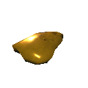 |
f7b1daf6a623b4e7eaefbc3a58cde866 | $item_amber | Amber | Material | <color=yellow>Valuable |
| AmberPearl 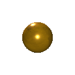 |
4dc179674a53ef84298539d805f7d690 | $item_amberpearl | Amber Pearl | Material | <color=yellow>Valuable |
| AncientSeed |
30790457c236149db9bffcf03654dca4 | $item_ancientseed | Ancient Seed | Material | Held against your ear, you hear tiny whisperings within... |
| ArmorAshlandsMediumChest |
a989eeea9eadaa943bca7a89b6913c10 | $item_chest_medium_ashlands | Breastplate of Ask | Chest | The first man in Midgard knew how to guard his most vital organs, perhaps with a breastplate just like this one. |
| ArmorAshlandsMediumlegs |
547ac0e99cef41f448c93129bdbd2196 | $item_legs_medium_ashlands | Trousers of Ask | Legs | The first man to roam Midgard preferred to tread lightly. Wearers of these trousers could learn a thing or two from him. |
| ArmorBronzeChest |
7115ea97fbd2d4cc686f26e4f9b13d7d | $item_chest_bronze | Bronze Plate Tunic | Chest | A breastplate of hammered bronze. |
| ArmorBronzeLegs 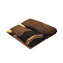 |
3aa67ee8462d949478689f66652b5659 | $item_legs_bronze | Bronze plate Leggings | Legs | Bronze greaves to shield your legs. |
| ArmorCarapaceChest 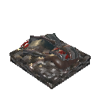 |
fc3146dae7922f749a7fd0c5e6301e3e | $item_chest_carapace | Carapace Breastplate | Chest | A breastplate crafted from the burnished carapace of a giant insect. |
| ArmorCarapaceLegs 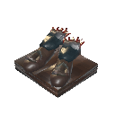 |
62a2c4b1f8e559d4296200a69af62acb | $item_legs_carapace | Carapace Greaves | Legs | Leg guards of a rigid carapace. |
| ArmorDress1 |
1d26936e3e88a3c41b3da914d3820f69 | $item_chest_dress1 | Simple Dress Brown | Chest | A simple brown dress. |
| ArmorDress10 |
16eab1923789e954e9a695a601e7f825 | $item_chest_dress10 | Simple Dress Natural | Chest | A simple dress. |
| ArmorDress2 |
f51b59cf853ad6d4c826953a13860c79 | $item_chest_dress2 | Shawl Dress Brown | Chest | A brown dress accompanied by a warm shawl. |
| ArmorDress3 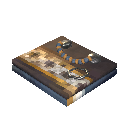 |
b3028959788a1824793af1846acddfff | $item_chest_dress3 | Beaded Dress Brown | Chest | A brown dress accompanied by beads and silver. |
| ArmorDress4 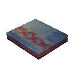 |
236e13b226d2050439790a5de4f63df3 | $item_chest_dress4 | Simple Dress Blue | Chest | A simple blue dress. |
| ArmorDress5 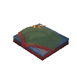 |
caa6af13388a05d46a68322381876139 | $item_chest_dress5 | Shawl Dress Blue | Chest | A blue dress accompanied by a warm shawl. |
| ArmorDress6 |
746680564420fbe40893bd910ec681ed | $item_chest_dress6 | Beaded Dress Blue | Chest | A blue dress accompanied by beads and bronze. |
| ArmorDress7 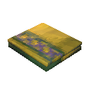 |
304e22a9198661a4e8bcd85a124e5079 | $item_chest_dress7 | Simple Dress yellow | Chest | A simple yellow dress. |
| ArmorDress8 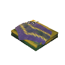 |
d8a5b8faa565b6a4fb8d100ff9d2a787 | $item_chest_dress8 | Shawl Dress Yellow | Chest | A yellow dress accompanied by a warm shawl. |
| ArmorDress9 |
23b0da22f7cdde64a9617ba555ad666e | $item_chest_dress9 | Beaded Dress Yellow | Chest | A yellow dress accompanied by beads and silver. |
| ArmorFenringChest 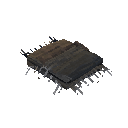 |
21c42d5c971ce334e88b7a674b56aabe | $item_chest_fenris | Fenris Coat | Chest | The beast could draw deep breaths, so that its howl could be heard far across the land. |
| ArmorFenringLegs 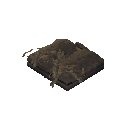 |
a8d4a885a212a70428dd957e57824fd4 | $item_legs_fenris | Fenris Leggings | Legs | The legs of the beast were lean and strong, so that it could leap great strides. |
ArmorFlametalChest |
aec07a7ddc2752c4b8d5dd4ffc191a17 | $item_chest_flametal | Flametal Breastplate | Chest | This fusion of mysterious flametal and charred bones serves as a protective layer more resilient than anything you could ever find in Midgard. |
| ArmorFlametalLegs |
4118839cb60b26440a0cf241747cc5b2 | $item_legs_flametal | Flametal Greaves | Legs | Heavy trousers insulate against the heat, while solid greaves keep your shins safe from low blows. |
| ArmorIronChest |
a6abefa79fd5f4d18ac0123c58f9f42a | $item_chest_iron | Iron Scale Mail | Chest | An iron scale mail, this will turn all but the strongest of blows. |
| ArmorIronLegs 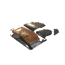 |
340aa8477da1f4277a48346379dd6dd2 | $item_legs_iron | Iron Greaves | Legs | Iron greaves to protect your legs. |
ArmorLeatherChest |
c560c07cd710649d0ba2473bec5dd389 | $item_chest_leather | Leather Tunic | Chest | A tunic made from animal hide. |
| ArmorLeatherLegs |
3a4d67590eba143f1940afa963b69f7f | $item_legs_leather | Leather Trousers | Legs | They squeak a little when you walk. |
| ArmorMageChest |
a8689ea9b3e988d47a81ed4d619fe8e1 | $item_chest_mage | Eitr-weave Robe | Chest | These artfully layered robes have spells and charms sewn into every seam and fold. |
| ArmorMageChest_Ashlands |
d761a647533c2684dab57fa701f7e533 | $item_chest_mage_ashlands | Robes of Embla | Chest | Imbued with the power of the first sorceress, these robes will grant a boon to any who seeks to wield the ancient art of magic. |
| ArmorMageLegs |
2519bb778ad63ee47beb32dc6f9c8f4c | $item_legs_mage | Eitr-weave Trousers | Legs | The trousers worn by mages are always especially tight. Discomfort fuels the focus that is needed for magic... |
| ArmorMageLegs_Ashlands 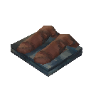 |
6f4302cbe61f4414893605f85f8c7e0b | $item_legs_mage_ashlands | Trousers of Embla | Legs | Whether or not the first sorceress actually wore trousers exactly like these, we can never know. |
| ArmorPaddedCuirass |
e4154881a4bef442fa2498df23668a40 | $item_chest_pcuirass | Padded Cuirass | Chest | Finely wrought and strong enough to turn even the sharpest blades. |
| ArmorPaddedGreaves |
3026a1d4f080c4693a15c16426d6a70e | $item_legs_pgreaves | Padded Greaves | Legs | Expertly crafted leg protection. |
| ArmorRagsChest |
20aac000994044116956b2a111cc4311 | $item_chest_rags | Rag Tunic | Chest | Better than nothing. |
| ArmorRagsLegs 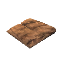 |
668335ca58aaf49079ea9561535e8bed | $item_legs_rags | Rag Trousers | Legs | A simple remedy for nudity. |
| ArmorRootChest |
36b9c8cb3d69b1d4092efe5455f00648 | $item_chest_root | Root Harnesk | Chest | Finely wrought and strong enough to turn even the sharpest blades. |
| ArmorRootLegs |
d972417c1ae71974095085f2ee994efc | $item_legs_root | Root Leggings | Legs | A light armor oddly woven together by ancient roots and bark. |
| ArmorTrollLeatherChest |
36b8b5f1b73f64451b674edfc0e0395b | $item_chest_trollleather | Troll Leather Tunic | Chest | Trolls are hard to skin but their leather is tough and warm. |
| ArmorTrollLeatherLegs 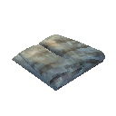 |
0c826230f0bae4c80a534fc497aebac4 | $item_legs_trollleather | Troll Leather Trousers | Legs | Leggings of tough troll hide. |
| ArmorTunic1 |
b1a1c9912ba2cf543ba10c466834d581 | $item_chest_tunic1 | Simple Tunic Blue | Chest | A simple blue tunic. |
| ArmorTunic10 |
8c4c8153a647a9e4cb5ce18e1649a272 | $item_chest_tunic10 | Simple Tunic Natural | Chest | A simple tunic. |
| ArmorTunic2 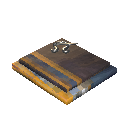 |
e831f7441565ec94e8ff2daacd542419 | $item_chest_tunic2 | Cape Tunic Blue | Chest | A blue tunic accompanied by a cape. |
| ArmorTunic3 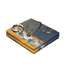 |
2d55254bfbdb49b469f231c0bfd6a38f | $item_chest_tunic3 | Beaded Tunic Blue | Chest | A blue tunic accompanied by beads and silver. |
| ArmorTunic4 |
2a774e4fb45866c4d8f42a26bb7bc026 | $item_chest_tunic4 | Simple Tunic Red | Chest | A simple red tunic. |
| ArmorTunic5 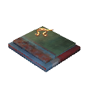 |
e9caedfa19accc044a8a0a92616d71dd | $item_chest_tunic5 | Cape Tunic Red | Chest | A red tunic accompanied by a cape. |
ArmorTunic6 |
0279b6c58ae66c74cad523e0ae0323a5 | $item_chest_tunic6 | Beaded Tunic Red | Chest | A red tunic accompanied by beads and bronze. |
| ArmorTunic7 |
7926403d9b24a5b4eaf83a8b12f5ad0d | $item_chest_tunic7 | Simple Tunic Yellow | Chest | A simple yellow tunic. |
| ArmorTunic8 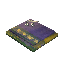 |
ef9c92e544930294782bbadc18da130e | $item_chest_tunic8 | Cape Tunic Yellow | Chest | A yellow tunic accompanied by a cape. |
| ArmorTunic9 |
0152054a0f04c0646b93c8db1555b9ee | $item_chest_tunic9 | Beaded Tunic Yellow | Chest | A yellow tunic accompanied by beads and silver. |
ArmorWolfChest |
06a9f43e2319d4ff2a68a085a338f636 | $item_chest_wolf | Wolf Hide Chestpiece | Chest | A wolfskin jerkin, warm and wild-looking. It protects against the cold. |
| ArmorWolfLegs |
8b0685cca4c214bbbb81c26a4ec46cb9 | $item_legs_wolf | Wolf Hide Trousers | Legs | Shaggy breeches of wolfskin. |
| ArrowBronze |
8beb57971df834c7caabf0be6c847bb8 | $item_arrow_bronze | Bronzehead Arrow | Ammo | Sharper than flint. A sleek messenger of death. |
| ArrowCarapace 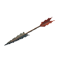 |
a64dfa84487f9f84fb07cd1ea8c6ee90 | $item_arrow_carapace | Carapace Arrow | Ammo | Heavy and pointy, this one's gonna hurt. |
| ArrowCharred |
b169a52c199167b428c5608a687514f4 | $item_arrow_charred | Charred Arrow | Ammo | This arrow has been whittled into shape from a charred femur, and it's as hard as any metal. |
ArrowFire |
6e0b443c9754043b193065c60a3a4d2f | $item_arrow_fire | Fire Arrow | Ammo | This arrow burns whatever it pierces. |
ArrowFlint |
069f2df2bd02d42a5a81997c5c8e0c46 | $item_arrow_flint | Flinthead Arrow | Ammo | A hide-breaker with a head of flint. |
| ArrowFrost 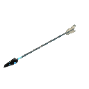 |
8b1055a6e2e46234dabdbf32c6d4b78b | $item_arrow_frost | Frost Arrow | Ammo | A shard of piercing ice. |
ArrowIron |
0f77c8bd38729482c8e915807fb94891 | $item_arrow_iron | Ironhead Arrow | Ammo | Capped with iron and flighted with dark feathers. |
ArrowNeedle |
d40a210614586407989421b0e1d49dd6 | $item_arrow_needle | Needle Arrow | Ammo | The final stitch. |
| ArrowObsidian |
23db0c1d3c953da4f865af7f9fca8ed5 | $item_arrow_obsidian | Obsidian Arrow | Ammo | A sliver of darkness. |
| ArrowPoison |
500ef375ad2694c77ac18b27565a63eb | $item_arrow_poison | Poison Arrow | Ammo | A bitter sting from afar. |
ArrowSilver |
82916d01f3d67374eb95ae6ab022065e | $item_arrow_silver | Silver Arrow | Ammo | A needle to calm restless spirits. |
ArrowWood |
bf013984a97904e9b90ae0df1deba39b | $item_arrow_wood | Wood Arrow | Ammo | An arrow of sharpened wood. |
| AskBladder |
b23c3f53b46dbcc4f90b63b5e72547db | $item_askbladder | Asksvin Bladder | Material | An acidic smell still lingers. Prominently. |
| AskHide |
f3a80b05846da25418e883bd19ef7ccd | $item_askhide | Asksvin Hide | Material | This sturdy leather is thick, and still warm to the touch. |
| Asksvin_Bite | 0326019c446668643a7e4ac1c4a39747 | lox bite | lox bite | OneHandedWeapon | NULL |
| Asksvin_Headbutt | 7fa7026c3a90353488c2102dcd33319b | Dragon claw left | Dragon claw left | OneHandedWeapon | NULL |
| Asksvin_Pounce | 318766bcdc4e4464ba2e2ab67e026251 | lox bite | lox bite | OneHandedWeapon | NULL |
| Asksvin_Turnaround | 84556ab0d6640e14f9ff655ae9a8b50f | lox bite | lox bite | OneHandedWeapon | NULL |
| AsksvinCarrionNeck |
204b551c9a049968e81236ca5bab5a3d | $item_asksvincarrionneck | Asksvin Neck | Material | A neck in its final stage of life. |
| AsksvinCarrionPelvic |
54a642ac4e527dd5dbd7c359351e6239 | $item_asksvincarrionpelvic | Asksvin Pelvis | Material | The pelvic bone of a four legged creature. |
| AsksvinCarrionRibcage |
0d54ca922032a4d92a785a134b40ed38 | $item_asksvincarrionribcage | Asksvin Ribcage | Material | These ribs have already been stripped clean of any meat. |
| AsksvinCarrionSkull |
c489ab68882a75f74acaf2a130f7e5eb | $item_asksvincarrionskull | Asksvin Skull | Material | A thick skull, with room for a surprisingly large brain. |
| AsksvinEgg |
7583849c02f0d0d4a8b118878dbb94a9 | $item_asksvin_egg | Asksvin Egg | Misc | Hard as rock, yet you can sense the presence of something inside. This should be kept warm. |
| AsksvinMeat 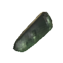 |
b8e749d3f5a45f34eaa9a6b4c521d34a | $item_asksvin_meat | Asksvin Tail | Material | Smells a bit smokey, even when raw. |
| AtgeirBlackmetal |
cadb835c9eea4fc4590601cfc7177b38 | $item_atgeir_blackmetal | Black Metal Atgeir | TwoHandedWeapon | A vicious hewing-axe of almost unbreakable black metal. |
| AtgeirBronze |
da4341e5dd54346eb930a52286fab683 | $item_atgeir_bronze | Bronze Atgeir | TwoHandedWeapon | A true warrior's tool. |
| AtgeirHimminAfl |
7c7e3b180b070eb4c8547c0fce72fbd8 | $item_atgeir_himminafl | Himminafl | TwoHandedWeapon | It might not be a hammer, but Thor himself would still approve of this weapon. |
| AtgeirIron 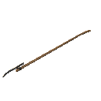 |
eab62f3879789485283981a9ca1e7b3c | $item_atgeir_iron | Iron Atgeir | TwoHandedWeapon | Blood-drinker, skull-cracker, death-bringer. |
| AxeBerzerkr |
9032ef841f95cb040b8a7915e25e3e30 | $item_axe_berzerkr | Berserkir Axes | TwoHandedWeapon | Let your rage take over and face the slaughter. |
| AxeBerzerkrBlood |
167f2ac188c5b3e4392358eda04d2485 | $item_axe_berzerkr_blood | Bleeding Berserkir Axes | TwoHandedWeapon | The closer you are to death, the harder you are sure to hit. |
| AxeBerzerkrLightning |
7c70421e03ef6ca438730eb7227cbcb7 | $item_axe_berzerkr_lightning | Thundering Berserkir Axes | TwoHandedWeapon | Carnage spreads around you when you wield these axes, such that Thor himself would be proud. |
| AxeBerzerkrNature |
e8bfff273e1c6b4438ad79eae5a94d3f | $item_axe_berzerkr_nature | Primal Berserkir Axes | TwoHandedWeapon | Your most primal instincts take over, and the nature around you reaches out to aid you. |
| AxeBlackMetal |
4a4b72e3bfc3c40b08d3ae37d7140468 | $item_axe_blackmetal | Black Metal Axe | OneHandedWeapon | A perfectly-balanced axe forged from dark metal with an emerald sheen. |
| AxeBronze 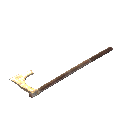 |
56812f11a8e904356a535bf3253afbbb | $item_axe_bronze | Bronze Axe | OneHandedWeapon | A bright and burnished blade, curved like a smile. |
| AxeFlint |
1c81915f9409743c2bfa81cc81337495 | $item_axe_flint | Flint Axe | OneHandedWeapon | Sharper than stone. |
| AxeIron |
7b2067435f94d4aae9a5f01f78f2742a | $item_axe_iron | Iron Axe | OneHandedWeapon | Sharp and strong, a woodcutter's friend. |
| AxeJotunBane 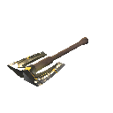 |
6bbecce943fd39f47a985a4a7cfbe186 | $item_axe_jotunbane | Jotun Bane | OneHandedWeapon | Not even the giants of old could weather the poisonous bite of this weapon. |
| AxeStone 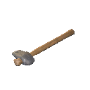 |
2c7e1807d4065470aa59a90cb64eddff | $item_axe_stone | Stone Axe | OneHandedWeapon | A crude axe for tree-felling. |
| babyseeker_attack | 5bb41b726e1d0e25f95341d55b26f29b | Dragon claw left | Dragon claw left | OneHandedWeapon | NULL |
| BarberKit |
96340c9f77996c14d9898368a678204a | $item_barberkit | Barber Kit | Misc | A kit fit for the finest of barbers. |
| Barley |
657fac4f0dba146bbbb62b1ac4c93957 | $item_barley | Barley | Material | A bundle of barley. |
| BarleyFlour |
8dac1e340a1874ce6acc249c3fcbe3d6 | $item_barleyflour | Barley Flour | Material | Great for baking bread. |
| BarleyWine |
eaef91dd432704e439143fae9f798069 | $item_barleywine | Fire Resistance Barley Wine | Consumable | Fortifies you against fire. |
| BarleyWineBase |
5feac573c044c4bb48a3e46fd78d4b6b | $item_barleywinebase | Barley Wine Base: Fire Resistance | Material | Needs to be fermented. |
| bat_melee | 657322cd3649149458c2fb380b92a476 | Bat melee | Bat melee | OneHandedWeapon | NULL |
Battleaxe |
55bcbb51967006f469e6c53149d951fa | $item_battleaxe | Battleaxe | TwoHandedWeapon | Skull-splitter, a warrior's joy. |
| BattleaxeCrystal |
635eb2beadfc0be408d2f797fde7f1f2 | $item_battleaxe_crystal | Crystal Battleaxe | TwoHandedWeapon | It's see-through and tears through. |
Beard1 |
1f1bf61dd5ebb4b9b8462976b3a5bf99 | $customization_beard01 | Long 1 | Customization | NULL |
| Beard10 |
a5bac18ed3fb3e249a47c2f793a68b65 | $customization_beard10 | Braided 4 | Customization | NULL |
| Beard11 |
e420c9fc06d958f478ba84b14bdc0dca | $customization_beard11 | Thick 2 | Customization | NULL |
| Beard12 |
86bc5ef9a69de494ab79e516f9124e28 | $customization_beard12 | Royal 1 | Customization | NULL |
| Beard13 |
026e06398e1bbda4ba5fe238786a8f31 | $customization_beard13 | Royal 2 | Customization | NULL |
| Beard14 |
ef9339ba22ffae34184ea5566460fd9e | $customization_beard14 | Braided 5 | Customization | NULL |
| Beard15 |
ca5a51cd1ebd3f34f949a490041c7fe4 | $customization_beard15 | Short 4 | Customization | NULL |
| Beard16 |
c524f91f09a32fd4e8263c97084cdadc | $customization_beard16 | Stonedweller | Customization | NULL |
| Beard17 |
26d969a0d37ae844485f0e091bebc3bb | $customization_beard17 | Neat | Customization | NULL |
| Beard18 |
98ab9ef1e255bd8449125c42c40364bd | $customization_beard18 | Royal 3 | Customization | NULL |
| Beard19 |
467c2d5ada1cbf34dbe9eaf3ec37274b | $customization_beard19 | Bushy | Customization | NULL |
| Beard2 |
de45bcd4d3d7f40dd93a0da5eb013eb8 | $customization_beard02 | Long 2 | Customization | NULL |
| Beard20 |
6ff726d226bfbf34b82f1740ad4531d9 | $customization_beard20 | Spiky | Customization | NULL |
| Beard21 |
34c9d1df9f6e3d043b4c374d73bee3ab | $customization_beard21 | Short 5 | Customization | NULL |
| Beard3 |
00976ddfe4fbb4f2293b4a75ec99cd58 | $customization_beard03 | Short 1 | Customization | NULL |
| Beard4 |
d2ee7b5d485af435eb396a190ab590f8 | $customization_beard04 | Short 2 | Customization | NULL |
| Beard5 |
6fc4cc52c46124136b06e2ca8e96fbe7 | $customization_beard05 | Braided 1 | Customization | NULL |
| Beard6 |
60edc759002244cdea17f795c3e13131 | $customization_beard06 | Braided 2 | Customization | NULL |
| Beard7 |
b1a9fb62b8a78a446918432826e3c449 | $customization_beard07 | Short 3 | Customization | NULL |
| Beard8 |
837902e7a5974134f995bd8a0ccaf456 | $customization_beard08 | Thick 1 | Customization | NULL |
| Beard9 |
6ada1e76221e87943afd36bedc886a5d | $customization_beard09 | Braided 3 | Customization | NULL |
| BeardNone | 3f5a0776b52a04539a901b771c0fceaa | $customization_nobeard | No Beard | Customization | NULL |
| BeechSeeds |
d04c1f943742a4d8988c883b061bf668 | $item_beechseeds | Beech Seeds | Material | Plant them to grow a beech tree. |
| Bell |
fcb233ef1c1a23d45a6cc6498c3c29d1 | $item_bell | Bell | Misc | For whom does the bell toll? |
| BellFragment |
54f6cafe65f465141808126d5999a9d9 | $item_bellfragment | Bell Fragment | Material | This ancient fragment appears to be a piece of a broken bell... |
| BeltStrength |
7690b97064b61444e80b63815cfae915 | $item_beltstrength | Megingjord | Utility | Gives the wearer superhuman strength. |
| Bilebag |
cad73936b4378864f947c8066f4a49d9 | $item_bilebag | Bilebag | Material | Caustic bile drawn from the corpse of a gjall. |
| BirchSeeds 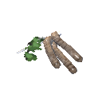 |
0ac7df79464d86a4480969ba2136bfbe | $item_birchseeds | Birch Seeds | Material | Plant them to grow a birch tree. |
BlackCore |
c076f3cf2ba3238459de9b6c24c98169 | $item_blackcore | Black Core | Material | Filled to the brim with ancient power. |
| BlackMarble 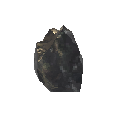 |
a3bd8fd44a58a2708ad907d66ca9348f | $item_blackmarble | Black Marble | Material | A block of solid stone, seamed with shifting colors. |
| BlackMetal 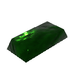 |
4deafc8c9808b40bf96b4c14cfbe99b5 | $item_blackmetal | Black Metal | Material | A heavy bar of dark metal. |
| BlackMetalScrap 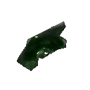 |
3138a938a4c5746658618ef4749a84d2 | $item_blackmetalscrap | Black Metal Scrap | Material | A twisted hunk of dark metal. |
| BlackSoup 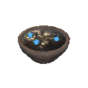 |
ed5ebb1d6549d0846a49f710bdac90e1 | $item_blacksoup | Black Soup | Consumable | A perfect balance of sweetness and acidity. |
| Blackwood |
d64051042d7fdca4bb2bcf70be91bfc3 | $item_blackwood | Ashwood | Material | Wood hardened by fire and ash. |
| blob_attack_aoe | bc5aa506c3ebd44f8a07ea63fd3768aa | fart | fart | OneHandedWeapon | NULL |
| blobelite_attack_aoe | 35de397e9482b4b5f9cccb324017f551 | fart | fart | OneHandedWeapon | NULL |
| blobLava_attack_aoe | 4c11ac7758929b0439e481629679eea7 | NULL | OneHandedWeapon | NULL | |
| blobtar_attack | 31b171d7fd7f19c1f9ccbbc196bc6a74 | fireballattack | fireballattack | OneHandedWeapon | NULL |
Bloodbag |
bb5b960fe2536af4c8e22eb71e1079ca | $item_bloodbag | Bloodbag | Material | The contents of a leech. Ick! |
| BloodPudding 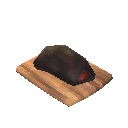 |
7ab61fd34cba3429083bb343cbaa9cd0 | $item_bloodpudding | Blood Pudding | Consumable | It's bloody tasty. |
| Blueberries 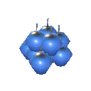 |
329ca5791daef48e08f8dc65a15c737a | $item_blueberries | Blueberries | Consumable | Tiny but tasty. |
| boar_base_attack | 9fd5fe8ffd40c405ba7b8e7a73ad7ddd | boar attack1 | boar attack1 | OneHandedWeapon | NULL |
| BoarJerky 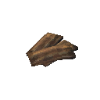 |
18194663ced4bbe42ba2b755fe44a4f2 | $item_boarjerky | Boar Jerky | Consumable | Lean and salty. |
| BoltBlackmetal 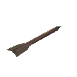 |
ba50ac49b67505b4e823c7628b9866e6 | $item_bolt_blackmetal | Blackmetal Bolt | Ammo | A sleek bolt of dark metal. |
| BoltBone 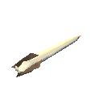 |
992daff46ffea2046b811a9683a3dcde | $item_bolt_bone | Bone Bolt | Ammo | A crude bolt of yellowed bone. |
| BoltCarapace |
2f32cf8f5b65863489192cd0b143c651 | $item_bolt_carapace | Carapace Bolt | Ammo | A heavy and solid bolt. |
| BoltCharred |
559edadb35a74d04394d8c9b6259ad0e | $item_bolt_charred | Charred Bolt | Ammo | A sturdy bone from a forearm, shaped into a deadly bolt. |
BoltIron |
69e017212c834360f8f60a46f35a895e | $item_bolt_iron | Iron Bolt | Ammo | A sturdy iron missile. |
| BombBile |
9719addab933f014f8e0b549af0705d4 | $item_bilebomb | Bile Bomb | OneHandedWeapon | Handle with care. |
| BombLava |
5089eb84563c9b649b511335d79b4d5c | $item_lavabomb | Basalt Bomb | OneHandedWeapon | With enough heat, it solidifies upon explosion. |
| BombOoze |
a871ff4af548a40f7aedb14cdb741146 | $item_oozebomb | Ooze Bomb | OneHandedWeapon | The stench is unbearable... |
| BombSiege |
db763e9c02b89144394e495a6bd9f525 | $item_catapult_ammo | Explosive Payload | Material | Best used with a catapult. Handle with care. |
BombSmoke |
4cbe934cd4008624bb915a79246049c1 | $item_smokebomb | Smoke Bomb | OneHandedWeapon | Everyone knows you can't breathe in the smoke. |
| BoneFragments |
f2e435d4bef9a4c77bcc33e1081b226f | $item_bonefragments | Bone Fragments | Material | A pile of shattered bones. |
| bonemass_attack_aoe | 6e95c953335a6479b9879398f19f6522 | heal | heal | OneHandedWeapon | NULL |
| bonemass_attack_punch | ee2479f8189384a23ba58d61479db0c1 | slap | slap | OneHandedWeapon | NULL |
| bonemass_attack_spawn | 654bc8f7b5dd14df5b10d813f4a555b1 | heal | heal | OneHandedWeapon | NULL |
| bonemass_attack_throw | d6d3120271c9c4e5da1495b578188cc5 | slime throw | slime throw | OneHandedWeapon | NULL |
| BonemawSerpent_bite | 594c2a19fffe22b469c5a48a8a9667fa | Serpent bite | Serpent bite | OneHandedWeapon | NULL |
| BonemawSerpent_breath | 9d808c9593726e9499cb1b8d8d1ce01b | Fallen Valkyrie Poison Breath | Fallen Valkyrie Poison Breath | OneHandedWeapon | NULL |
| BonemawSerpent_ram | 1da9c6e4ef674564c9e204df2ec71b42 | Serpent bite | Serpent bite | OneHandedWeapon | NULL |
| BonemawSerpent_spit | d92535704980ccb4eaa869a7cc3700b8 | bonemaw spit | bonemaw spit | OneHandedWeapon | NULL |
| BonemawSerpent_taunt | 369081d55f46eae4a8f918493f2de0ba | Serpent Taunt | Serpent Taunt | OneHandedWeapon | NULL |
| BoneMawSerpentMeat |
fcc76455055d28141ae30c5172553f75 | $item_bonemawmeat | Bonemaw Meat | Material | A tasty, white fish meat. Very good for your bones! |
| BonemawSerpentScale |
527b55aa052cd604bb54fb5cb39c4a76 | $item_bonemawscale | Bonemaw Scale | Material | It looks just like bone. Best not to question the anatomy of this creature too much... |
| BonemawSerpentTooth |
7e0f1c556d44b144c8dc6111c2bce82b | $item_bonemawtooth | Bonemaw Tooth | Material | This has caused the death of many a brave sailor. |
| Bow |
10ef404d2efa74906adeafe7d433b347 | $item_bow | Crude Bow | Bow | A crude but functional bow. |
BowAshlands |
811f697b71a83ab4483c449e33f65516 | $item_bow_ashlands | Ash Fang | Bow | Risen again from the ashes, this bow holds unyielding strength. |
| BowAshlandsBlood |
5488a5e0e9eb5cd41bec18121dc7ae4b | $item_bow_ashlandsblood | Blood Fang | Bow | Arrows loosed from this bow will tear into flesh with unmatched ferocity. |
| BowAshlandsRoot |
71d4e1d41f039fa468c4a8e41090664f | $item_bow_ashlandsroot | Root Fang | Bow | Like the twisting branch was made to seek the sun, this bow was made to seek the slaughter. |
| BowAshlandsStorm |
ed9b5f22d0c5f0e4d8f1d0155b1989f3 | $item_bow_ashlandsstorm | Storm Fang | Bow | Let your arrows fly as swift as the lightning strikes. |
BowDraugrFang |
f11393c8936ff3343a7057e99eca3a20 | $item_bow_draugrfang | Draugr Fang | Bow | Dark wood strung with glistening sinew. A vicious thing. |
| BowFineWood |
64404a9b9aeb8495da8f72ba8ce744aa | $item_bow_finewood | Finewood Bow | Bow | A simple bow of strong and supple wood. |
| BowHuntsman 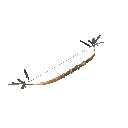 |
970acb6ea7b4b154287b57b80c1dea44 | $item_bow_huntsman | Huntsman Bow | Bow | Finely worked and strung. A huntsman's joy. |
| BowSpineSnap 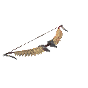 |
a5ab64bc00ff578458957e0ef037d244 | $item_bow_snipesnap | Spinesnap | Bow | Using this bow is backbreaking work but so worth it. |
| Bread |
2fee923e08bd4408b81e6a502d2cad16 | $item_bread | Bread | Consumable | A tasty loaf of bread. |
| BreadDough 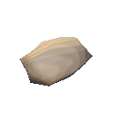 |
33a67e9024961ee43890f8fe350e3675 | $item_breaddough | Bread Dough | Material | Ready for the oven. |
Bronze |
629fd54829a1d446d8905f0b0eac9982 | $item_bronze | Bronze | Material | A strong alloy of copper and tin. |
BronzeNails |
c939491e12ed84c48b8085edc1559a75 | $item_bronzenails | Bronze Nails | Material | Used in construction of ships and furniture. |
BronzeScrap |
8b1f7b198496f60b4a6783b6bc81cd99 | $item_bronzescrap | Scrap Bronze | Material | It's old and oxidized but can be smelted and used again. |
| BugMeat |
8e2d9221ae3c6914bbacafa6578f8bc1 | $item_bug_meat | Seeker Meat | Material | When you crack open their shells, the meat within is tender and succulent. |
| CapeAsh |
ebfbafddb61bf9444bbec87bca920f4e | $item_cape_ash | Ashen Cape | Shoulder | Thin metal threads are woven into this cape to create an intricate pattern, like a destiny woven by the Norns themselves. |
| CapeAsksvin |
997e29853be30b94fbd38137f229ff0f | $item_cape_asksvin | Asksvin Cloak | Shoulder | This thick cape catches the wind, not unlike the sail of a ship. |
| CapeDeerHide 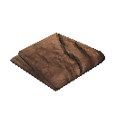 |
39677b7a4296f4510ba3d42e9e6e69a1 | $item_cape_deerhide | Deer Hide Cape | Shoulder | Rustic chic. |
| CapeFeather |
b0b5882b91c57294bb05b50f3ecd6d81 | $item_cape_feather | Feather Cape | Shoulder | Donning this cape makes you feel lighter, almost as if you could fly! |
| CapeLinen |
34cc1b4dfde224cc88a1610d22f68212 | $item_cape_linen | Linen Cape | Shoulder | A simple traveler's cape. |
| CapeLox 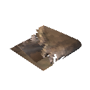 |
14a4713ba74d84687948f933010e0805 | $item_cape_lox | Lox Cape | Shoulder | A pelt from one of the great beasts, thick and warm. |
| CapeOdin 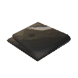 |
a8650cb3f36c2f61e9bd01533123cfc2 | $item_cape_odin | Cape of Odin | Shoulder | Odin's finest warriors deserve the finest cloth. |
| CapeTest |
d7dc88a37783f4be889bc1a59b6b20b6 | CAPE TEST | CAPE TEST | Shoulder | Da cape |
| CapeTrollHide 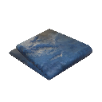 |
c140f11f24500f84d8c97166a571bfcf | $item_cape_trollhide | Troll Hide Cape | Shoulder | Trollskin is tough and supple. |
CapeWolf |
0d266be25589049dbb9c0f88c66f9a35 | $item_cape_wolf | Wolf Fur Cape | Shoulder | Wolves are natural survivors. This one was just unlucky. Now its pelt will warm you in the snow. |
| Carapace |
76a31a5097c2f583b9833c44b6817b89 | $item_carapace | Carapace | Material | A plate of chitinous armor. |
| Carrot 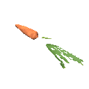 |
f0d153fe9fad5419c8e5171d9e866947 | $item_carrot | Carrot | Consumable | An orange treat. |
| CarrotSeeds 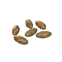 |
faa8a6334d1fa4632accbd46705df2f9 | $item_carrotseeds | Carrot Seeds | Material | Plant these if you like carrots... |
| CarrotSoup 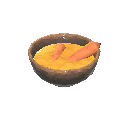 |
70c6897b051694e299261a1bf2b79bf6 | $item_carrotsoup | Carrot Soup | Consumable | A warm tasty soup made of mostly carrots. |
| Catapult_ammo |
a0c4bdbd614c6764a9ed10389ea853b7 | $item_catapult_training_ammo | Grausten Payload | Material | Best used with a catapult. Make sure nothing fragile is in the way. |
| CelestialFeather |
14d140093d10af44f855de03cd448267 | $item_celestialfeather | Celestial Feather | Material | The only remnant of the fallen valkyrie's former self. |
| CeramicPlate |
d4fca34caba56be48936a88c01864155 | $item_ceramicplate | Ceramic Plate | Material | No matter how hot this gets, the other side of it remains strangely cool. |
| Chain |
464ae55df98814e1c8cf5e61ef13589c | $item_chain | Chain | Material | A link of iron chain. |
| CharcoalResin |
ee3cbeecaeb309b4dad4c8f0a91bc333 | $item_charcoalresin | Charcoal Resin | Material | The resin from a tree that was set ablaze a long time ago. It's still ready to burn some more. |
| charred_bow |
3362d71873cbb9445b034bb8edecbd09 | Bow | Bow | Bow | A simple bow. |
| charred_bow_Fader |
9808a32af6e4a094885d2425ba4106f0 | Bow | Bow | Bow | A simple bow. |
| charred_bow_volley |
9083e07f5ae37b14792d838e0622eadd | Bow | Bow | Bow | A simple bow. |
| charred_bow_volley_Fader |
7633391e4000e524d9caab96eca0b499 | Bow | Bow | Bow | A simple bow. |
| Charred_Breastplate |
8c047f662b54b6449ab96ca74c72e77e | Iron plate armor | Iron plate armor | Chest | An iron scale mail, this will turn all but the strongest of blows. |
| charred_dyrnwyn_greatsword_feint |
7778dae28a7c5000485a09523df74149 | Charred Sword | Charred Sword | TwoHandedWeapon | NULL |
charred_dyrnwyn_greatsword_swing |
d8061eeccc02655c2aa6d252284a5e32 | Charred Sword | Charred Sword | TwoHandedWeapon | NULL |
charred_dyrnwyn_greatsword_thrust |
a7910fba6e494dc4cac9f85225ccf400 | Charred Sword | Charred Sword | TwoHandedWeapon | NULL |
charred_dyrnwyn_greatsword_thrustfeint |
19323b808214c2139a4c51d8056871d9 | Charred Sword | Charred Sword | TwoHandedWeapon | NULL |
charred_fader_greatsword_feint |
cf56e5a6e1d698d44995b42703d5b336 | Charred Sword | Charred Sword | TwoHandedWeapon | NULL |
charred_fader_greatsword_swing |
8287f322000ea4b48aa4947582795472 | Charred Sword | Charred Sword | TwoHandedWeapon | NULL |
charred_fader_greatsword_thrust |
cd46af00c7df31143aa65d6427701b78 | Charred Sword | Charred Sword | TwoHandedWeapon | NULL |
charred_fader_greatsword_thrustfeint |
99caa2ccc18cee6478949ddb88bd131c | Charred Sword | Charred Sword | TwoHandedWeapon | NULL |
charred_greatsword_feint |
c5272a026ed2eed43a3fd36d8b487cf3 | Charred Sword | Charred Sword | TwoHandedWeapon | NULL |
| charred_greatsword_swing |
f3697a5e015b3af44bb47e2624302bab | Charred Sword | Charred Sword | TwoHandedWeapon | NULL |
charred_greatsword_thrust |
e52a5a20db75d0a439ebe4afa7605fc8 | Charred Sword | Charred Sword | TwoHandedWeapon | NULL |
charred_greatsword_thrustfeint |
0aa47a81f6e42be4ebd863fd0857a2c3 | Charred Sword | Charred Sword | TwoHandedWeapon | NULL |
| Charred_Helmet |
55fc29da099fb054180c0028f8910bb3 | Iron plate armor | Iron plate armor | Helmet | An iron scale mail, this will turn all but the strongest of blows. |
| Charred_HipCloth |
58f5f85fffb3950499f70f0727298745 | Iron plate armor | Iron plate armor | Legs | An iron scale mail, this will turn all but the strongest of blows. |
| Charred_MageCloths 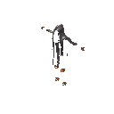 |
41479a9cc7273894caf1f4490554d733 | Iron plate armor | Iron plate armor | Chest | An iron scale mail, this will turn all but the strongest of blows. |
| charred_magestaff_fire |
1f153ac8834cf574aafe3cf9c975768c | Bow | Bow | TwoHandedWeapon | A simple bow. |
| charred_magestaff_summon |
9b1f8670850cece4b99c9993cf1f65cc | Bow | Bow | TwoHandedWeapon | A simple bow. |
| charred_twitcher_scratch_l | 48f3aab9e48504e4598efdc9d311be96 | Charred Sword | Charred Sword | TwoHandedWeapon | NULL |
| charred_twitcher_scratch_r | 4020dee36fc4ba34d9573b3740510b7b | Charred Sword | Charred Sword | TwoHandedWeapon | NULL |
charred_twitcher_throw |
93e4a5e873a038845b8fcc7541242976 | Bow | Bow | Bow | A simple bow. |
| CharredBone |
a285a141370e6fb4680875951c523356 | $item_charredbone | Charred Bone | Material | Followed by the distinct smell of burnt meat. |
| CharredCogwheel |
2b4ca16583724ce4db9ddaccbcda1939 | $item_charredcogwheel | Charred Cogwheel | Material | This could be used for some clever machinery... |
Charredskull |
69057bd421766c7909cc1dbfa9822d7e | $item_charredskull | Charred Skull | Material | The blackened skull of a long-dead warrior. It's unlikely that a proper burial would grant them any peace. |
| chest_hildir1 |
eeb860786e2e317489c7016afb24c48c | $item_chest_hildir1 | Hildir's Brass Chest | Misc | Property of Hildir, please return if found. |
| chest_hildir2 |
8758536ef2070fc4baeb47d42ae9327d | $item_chest_hildir2 | Hildir's Silver Chest | Misc | Property of Hildir, please return if found. |
| chest_hildir3 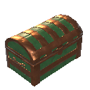 |
07678f73266b82d40886f1e182069aa3 | $item_chest_hildir3 | Hildir's Bronze Chest | Misc | Property of Hildir, please return if found. |
ChickenEgg |
bcec93b30ca420544a74096f93a10be3 | $item_chicken_egg | Egg | Misc | Keep it warm to see what comes out.. but what came first, really? |
| ChickenMeat |
c9db503a86111ee43b3be0e771d9757d | $item_chicken_meat | Chicken Meat | Material | All chickens bear the ancestral curse of being delicious. |
| Chitin |
5b647cde73f714bd1a46fa69ba5a52a1 | $item_chitin | Chitin | Material | A shard of crustacean shell. |
| Cloudberry 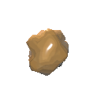 |
e5976e7a821df4b60ae18f2609a42ba3 | $item_cloudberries | Cloudberries | Consumable | The gold of the forest. |
| Club |
0942d0a620b2b4ba6b359495181c1f50 | $item_club | Club | OneHandedWeapon | A crude but useful weapon. |
| Coal |
46fa21129465749248a5a9f11a47bd0c | $item_coal | Coal | Material | A lump of coal. |
| Coins |
38e3fc6e8552046979e13b7967e862e4 | $item_coins | Coins | Material | <color=yellow>Valuable |
CookedAsksvinMeat |
ff8bde0f9de82a9488c43593b6fc60de | $item_asksvin_meat_cooked | Cooked Asksvin Tail | Consumable | This meat has a potent and mature flavour, but is very tasty when grilled right. |
CookedBoneMawSerpentMeat |
7f9c751e9667df443b25f401d3797611 | $item_bonemawmeat_cooked | Cooked Bonemaw Meat | Consumable | The boiling sea did nothing to this meat, but grilling it over the fire has given it a delightful crisp. |
| CookedBugMeat |
148ebe0b336e15344b7acbd2441c1490 | $item_bug_meat_cooked | Cooked Seeker Meat | Consumable | Succulent white meat. A true delicacy. |
| CookedChickenMeat |
0dda1ef0e466a7a40a8da37ef9c58d62 | $item_chicken_meat_cooked | Cooked Chicken Meat | Consumable | It tastes like chicken. |
| CookedDeerMeat |
ac9b056b94d63ae41b4c50e49ba9d676 | $item_deer_meat_cooked | Cooked Deer Meat | Consumable | All that running paid off. |
| CookedEgg |
8cb32b646b59626429259729d106fe2c | $item_egg_cooked | Cooked Egg | Consumable | Sunny side up! |
| CookedHareMeat |
b8affeec3ffcb554698306b767d545d7 | $item_hare_meat_cooked | Cooked Hare Meat | Consumable | Stringy but flavorful. |
| CookedLoxMeat |
d884967160e5046df8721d20c4456c81 | $item_loxmeat_cooked | Cooked Lox Meat | Consumable | A great hunk of tender meat, food fit for Valhalla! |
| CookedMeat |
36aa14c035121460384c93ff52b04f01 | $item_boar_meat_cooked | Cooked Boar Meat | Consumable | An earthly taste. |
| CookedVoltureMeat |
427f6415ea0a9bf46ab6735a03f69325 | $item_volture_meat_cooked | Cooked Volture Meat | Consumable | A chewy and somewhat dry meat. Some seasoning would probably make it taste better, but it'll fill your stomach regardless. |
| CookedWolfMeat |
899ba48391c77a140b1db11142d19593 | $item_wolf_meat_cooked | Cooked Wolf Meat | Consumable | A wild taste. |
| Copper |
a780bd461780849a7afccc525f927e2d | $item_copper | Copper | Material | A bar of pure copper ready to be worked. |
| CopperOre |
9bf8377529ad449bdb1de851e9e29dbf | $item_copperore | Copper Ore | Material | Unrefined copper. Needs to be refined in a smelter. |
| CopperScrap |
e15cae69b76c91edaaf45d5dd90a8bf4 | $item_copperscrap | Copper Scrap | Material | One person's scrap is another person's treasure. |
| CrossbowArbalest |
f094bf961f9064e6daaaf4008ff69639 | $item_crossbow_arbalest | Arbalest | Bow | A slow but powerful weapon. |
| CrossbowRipper |
4e37868b1c496a04f93c1ee12282e3a5 | $item_crossbow_ripper | Ripper | Bow | Rips your foes apart, simple as that. |
| CrossbowRipperBlood |
483a950c53776e74ea40aef310fefbb2 | $item_crossbow_ripper_blood | Wound Ripper | Bow | Ready to rend your enemies to pieces. |
| CrossbowRipperLightning |
f763fe1302d170b48b81bfce8dd4406e | $item_crossbow_ripper_lightning | Storm Ripper | Bow | The bolts will tear through your enemies like a particularly nasty gale. |
| CrossbowRipperNature |
3475543841265874fa8285ef8f9fcf60 | $item_crossbow_ripper_nature | Root Ripper | Bow | If the bolt doesn't pin your foe in place, the roots surging up from the ground surely will. |
| CryptKey |
fd7ff622246ebc94eb92385515cc06d3 | $item_cryptkey | Swamp Key | Misc | Partly covered in caked mud, it smells foetid. |
| Crystal |
60f705fc57ed0445f85dc8d5373e3733 | $item_crystal | Crystal | Material | A shard of crystal from deep within the earth. |
| Cultivator |
b1dab29aa3c2544eeaa48e64ca4db4dc | $item_cultivator | Cultivator | Tool | A farming tool for tilling soil. |
| Dandelion |
5faa3f669faaa4151bd93a69ec7eeceb | $item_dandelion | Dandelion | Material | Some call it a weed, but it's pretty nonetheless. |
| Deathsquito_sting | 00c0f5a619d554347a1da9f950051226 | Wraith melee | Wraith melee | OneHandedWeapon | NULL |
| DeerHide |
e8781dc863b7c41a79681458607070c7 | $item_deerhide | Deer Hide | Material | A cleaned hide from a deer. |
DeerMeat |
a3d4a31baa9fc0a41a44bca421f03a15 | $item_deer_meat | Deer Meat | Material | |
| DeerStew |
dcfe096cbabc3c54589b7b1cee57d67a | $item_deerstew | Deer Stew | Consumable | Fall-apart tender. |
| Demister |
aa3ae149fbf3709dfb2fefa4b11ecdf5 | $item_demister | Wisplight | Utility | A bound wisp to guide you through the thickest of mists. |
| dragon_bite | d245ef554a4b643e0bdfa49baa139535 | Dragon claw left | Dragon claw left | OneHandedWeapon | NULL |
| dragon_claw_left | 8fe1b275255cf415982d7ba8ac46a2c4 | Dragon claw left | Dragon claw left | OneHandedWeapon | NULL |
| dragon_claw_right | cd992350dd1dc401ca534951c9ef68af | Dragon claw left | Dragon claw left | OneHandedWeapon | NULL |
| dragon_coldbreath | 9abde2c085be349ef96bf28cde264879 | dragon breath | dragon breath | OneHandedWeapon | NULL |
| dragon_coldbreath_OLD | eceb9e032fc624fb69c5a6052998e402 | dragon breath | dragon breath | OneHandedWeapon | NULL |
| dragon_spit_shotgun | 312b751e3220f42dcacc1baab6443f99 | cold ball | cold ball | OneHandedWeapon | NULL |
| dragon_taunt | e308c171bdd344562a1232290c311332 | scream | scream | OneHandedWeapon | NULL |
| DragonEgg |
230a3689154484e76bdd8a758d731b1c | $item_dragonegg | Dragon Egg | Misc | Far heavier than it looks, with a faint humming sound from within. |
| DragonTear |
04c891adfbe3841a2bb528e1af63d626 | $item_dragontear | Dragon Tear | Material | The last frozen tear of a dragon, pulsating with mysterious energy. |
| draugr_arrow |
57ba8d3b64b274154a3dd3c2dc30958d | Ironhead arrow | Ironhead arrow | Ammo | Fire it with a bow. |
| draugr_axe |
32bb5e7b76e0f4644a764bb1a050b365 | Dragur axe | Dragur axe | OneHandedWeapon | NULL |
| draugr_bow |
602dae747dd37401a8f2c80e06580b13 | Bow | Bow | Bow | A simple bow. |
| draugr_sword |
f2bc7947da2b349e7a75a53e6b95d271 | Dragur axe | Dragur axe | OneHandedWeapon | NULL |
| Dverger_melee | e92321aae1f905c438be453d030dc347 | Club | Club | OneHandedWeapon | A crude but useful weapon. |
| Dverger_meleeAshlands | a6af385cee799c245b9320cd532966ca | Club | Club | OneHandedWeapon | A crude but useful weapon. |
| DvergerArbalest |
6b45eb62acd2eec46a77112c3f1e6655 | $item_crossbow_arbalest | Arbalest | Utility | A slow but powerful weapon. |
DvergerArbalest_shoot |
e0f811d558d9e6c41bb71cf89741f631 | $item_crossbow_arbalest | Arbalest | OneHandedWeapon | A slow but powerful weapon. |
DvergerArbalest_shootAshlands |
86ac6f05224db464d81ac221ac3adfbb | $item_crossbow_arbalest | Arbalest | OneHandedWeapon | A slow but powerful weapon. |
| DvergerHairFemale |
e71d0060850d95e439ff69ad7fa2ac10 | Iron plate armor | Iron plate armor | Legs | An iron scale mail, this will turn all but the strongest of blows. |
| DvergerHairFemale_Redhair |
e2ce31bfc43f2bd42aef9d705e077ab6 | Iron plate armor | Iron plate armor | Legs | An iron scale mail, this will turn all but the strongest of blows. |
| DvergerHairMale |
43e1b3be5b08a5249be79b1380c8a2e4 | Iron plate armor | Iron plate armor | Helmet | An iron scale mail, this will turn all but the strongest of blows. |
| DvergerHairMale_Redbeard |
aa384de686ca97846a2a115e4c586ad4 | Iron plate armor | Iron plate armor | Helmet | An iron scale mail, this will turn all but the strongest of blows. |
| DvergerMistile | 5e5102718f7b6ec419212fcf9f532cf3 | Club | Club | OneHandedWeapon | A crude but useful weapon. |
| DvergerStaffBlocker | 3676cd49fce5ef14198cae523b8fa730 | Club | Club | OneHandedWeapon | A crude but useful weapon. |
| DvergerStaffFire |
4ea01c47f61a3c043aa394071911eb09 | Club | Club | Utility | A crude but useful weapon. |
| DvergerStaffFire_clusterbomb | 3882cabde78f39241a4422b6d28e560a | Club | Club | OneHandedWeapon | A crude but useful weapon. |
| DvergerStaffFire_fireball | 3de4a8fce5e1056479eb22ab98f53b3d | Club | Club | OneHandedWeapon | A crude but useful weapon. |
| DvergerStaffHeal |
b9d9f4ae04aeba341afc4726742f16fa | Club | Club | Utility | A crude but useful weapon. |
| DvergerStaffHeal_heal | 179ad29dfc99fb246883359f0e2bcd83 | Club | Club | OneHandedWeapon | A crude but useful weapon. |
| DvergerStaffIce |
dc1ed86e8876ba24ebcf30dc83324128 | Club | Club | Utility | A crude but useful weapon. |
| DvergerStaffIce_icebolt | 94014ae880eddfa4b8739e35dcb9878d | Club | Club | OneHandedWeapon | A crude but useful weapon. |
| DvergerStaffNova | 881148d7e06462044a2376b170382148 | Club | Club | OneHandedWeapon | A crude but useful weapon. |
| DvergerStaffSupport |
fe755b0754c63c74091a299fa49e7f49 | Club | Club | Utility | A crude but useful weapon. |
| DvergerStaffSupport_buff | 7a2350e8323bbf44ca4c4c6752443f4a | Club | Club | OneHandedWeapon | A crude but useful weapon. |
| DvergerSuitArbalest |
54bb2436287b8134aa896388ec194b77 | Iron plate armor | Iron plate armor | Chest | An iron scale mail, this will turn all but the strongest of blows. |
| DvergerSuitArbalest_Ashlands |
936a0027de902cf4fa1b2cc7a0f3e372 | Iron plate armor | Iron plate armor | Chest | An iron scale mail, this will turn all but the strongest of blows. |
DvergerSuitFire |
571d7db520f98614896c68fd5f85533f | Iron plate armor | Iron plate armor | Chest | An iron scale mail, this will turn all but the strongest of blows. |
| DvergerSuitIce |
c385206c919f5924ebc14a6f8953386f | Iron plate armor | Iron plate armor | Chest | An iron scale mail, this will turn all but the strongest of blows. |
| DvergerSuitSupport |
7f1290eb6ee3c864db2d39f9387168f6 | Iron plate armor | Iron plate armor | Chest | An iron scale mail, this will turn all but the strongest of blows. |
| DvergrKey |
4278925925bda4f46871dd8f85ee2429 | $item_dvergrkey | Sealbreaker | Misc | An object used to break a Dverger seal. |
| DvergrKeyFragment |
12d409bb257391c4295fb01488496963 | $item_dvergrkeyfragment | Sealbreaker Fragment | Material | A fragment of a Dvergr sealbreaker. |
DvergrNeedle |
0b8daecf970794545a82337a838d61a1 | $item_dvergrneedle | Dvergr Extractor | Material | Looks like a perfect piece for piercing something... |
| DyrnwynBladeFragment |
210e6e42f80b00a4d88adc5022297007 | $item_Dyrnwyn_blade | Dyrnwyn Blade Fragment | Material | Parts of an old blade. If all the pieces were reassembled it could likely be made whole. |
| DyrnwynHiltFragment |
9bc163630246b344786f4f1aa32632c2 | $item_Dyrnwyn_hilt | Dyrnwyn Hilt Fragment | Material | The hilt of a long forgotten sword. Perhaps it could be reforged if one had all the pieces... |
| DyrnwynTipFragment |
9fb51565b6485a74cb2a1f83b2e8f9a9 | $item_Dyrnwyn_tip | Dyrnwyn Tip Fragment | Material | This shard of metal looks like the tip of a sword. One might be able to reforge the blade if more pieces are found... |
| Eikthyr_antler | 5f6691cb91bd6481fa2dfaf89d20006a | StagAttack1 | StagAttack1 | OneHandedWeapon | NULL |
| Eikthyr_charge | 845f2b3e31e79410d9add1c3e377bb98 | StagAttack2 | StagAttack2 | OneHandedWeapon | NULL |
| Eikthyr_flegs_OLD | 3dcfce8c032ac4be7bd94c90309b81bc | StagAttack1 | StagAttack1 | OneHandedWeapon | NULL |
| Eikthyr_stomp | c47f55c21f36ce5cda0afec8fe5a19c1 | slap | slap | OneHandedWeapon | NULL |
| Eitr |
c935b777fe22aa3fbb27aa1b95a8d946 | $item_eitr | Refined Eitr | Material | This is the stuff of life, the poison that consumes itself. The Dvergr refine it to use in their esoteric designs. |
| ElderBark |
cc0a7835a9cb7451bbe7c069a6cfe712 | $item_elderbark | Ancient Bark | Material | An ancient and sturdy material. |
| Entrails |
98b417d6832371f4e8678518bc449829 | $item_entrails | Entrails | Material | A slimy length of something's insides. |
| Eyescream |
56e913dddff620242a75fd1f9d0305f6 | $item_eyescream | Eyescream | Consumable | Crispy cool and creamy. |
| Fader_Bite | adfb271ffdb6fcb46bf80539e81f8142 | Fader Bite | Fader Bite | OneHandedWeapon | NULL |
| Fader_Claw_Left | b92b00b6c60411540af5777d67977be7 | Fader Claw Left | Fader Claw Left | OneHandedWeapon | NULL |
| Fader_Claw_Right | c318447231c59b041af59e8472d5d614 | Fader Claw Right | Fader Claw Right | OneHandedWeapon | NULL |
| Fader_Fissure | 3b7546e0d897851409bddbc1f0fee3ef | Fader Fissure | Fader Fissure | OneHandedWeapon | NULL |
| Fader_Fissure_Intense | b30478f16de2ca942a5f5b43385ed4b0 | Fader Fissure | Fader Fissure | OneHandedWeapon | NULL |
| Fader_Flamebreath | 22dfd184a1e09994b8e24e903d66601d | Fader Firebreath | Fader Firebreath | OneHandedWeapon | NULL |
| Fader_Jump | 6a9b9bc9f4ad7bd4799adfd3904c41fc | Fader Jump | Fader Jump | OneHandedWeapon | NULL |
| Fader_Jump_Left | 7a03fbcdb6778b440a72d70ab6b79d1a | Fader Jump | Fader Jump | OneHandedWeapon | NULL |
| Fader_Jump_Right | 0fc61ea4676887c43a4079b8fc2a66ff | Fader Jump | Fader Jump | OneHandedWeapon | NULL |
| Fader_Meteors | c32548c0b38704140a64e29306686438 | spawn | spawn | OneHandedWeapon | NULL |
| Fader_Meteors_Intense | 1f1568a4008508f46a4284a676a86600 | spawn | spawn | OneHandedWeapon | NULL |
| Fader_Roar | 34ab7f551429c6c499ab49b5c1a9ede4 | Fader Roar | Fader Roar | OneHandedWeapon | NULL |
| Fader_Roar_Intense | 185b29e240f163d4594f769d403ce762 | Fader Roar | Fader Roar | OneHandedWeapon | NULL |
| Fader_Spin | 2ee430e9c7048fa4fba651b5df5315c2 | Fader Spin | Fader Spin | OneHandedWeapon | NULL |
| Fader_Taunt | cc5ba45e6a47a804ab5ab332819927f3 | Fader Taunt | Fader Taunt | OneHandedWeapon | NULL |
| Fader_WallOfFire | 82365e798f70a124282bce92950f004a | Fader Wall of Fire | Fader Wall of Fire | OneHandedWeapon | NULL |
FaderDrop |
8ae15f010326e2346af6d9a3d4473743 | $item_fader_drop | Fader Relic | Material | The mystical power will be revealed another day. |
| fallenvalkyrie_claws | 0f51b524899ff3e44a6d117b22fb35a1 | Fallen Valkyrie Claws | Fallen Valkyrie Claws | OneHandedWeapon | NULL |
| fallenvalkyrie_poisonbreath | dace22f129b15d34b86385dae2c6c3bb | Fallen Valkyrie Poison Breath | Fallen Valkyrie Poison Breath | OneHandedWeapon | NULL |
| fallenvalkyrie_screech | 57115a4d622324449be5925311c22eed | Fallen Valkyrie Claws | Fallen Valkyrie Claws | OneHandedWeapon | NULL |
| fallenvalkyrie_spin | 0a6535dffcfff674cb212361b436130b | Fallen Valkyrie Aoe Spin | Fallen Valkyrie Aoe Spin | OneHandedWeapon | NULL |
| fallenvalkyrie_spit | 58950f6efdf6a88459753b2e76bf1aba | cold ball | cold ball | OneHandedWeapon | NULL |
| fallenvalkyrie_swoopattack | ce914c2d9ae7cfa49a810b32ba0da4b6 | Fallen Valkyrie swooping | Fallen Valkyrie swooping | OneHandedWeapon | NULL |
| fallenvalkyrie_taunt | bcfdfe5f431d150468d69e14c9015db1 | Fallen Valkyrie Claws | Fallen Valkyrie Claws | OneHandedWeapon | NULL |
| fallenvalkyrie_wingspin | ea704ecaeeb11ef479106f56902a8268 | Fallen Valkyrie Wingspin | Fallen Valkyrie Wingspin | OneHandedWeapon | NULL |
| Feathers |
bebb7e6da0544448a9f24e2df73a9aa6 | $item_feathers | Feathers | Material | A small pile of feathers. |
| Fenring_attack_claw | ec5894f53c7fd4f3b9b122c5457eb104 | claw | claw | OneHandedWeapon | NULL |
| Fenring_attack_fireclaw | 38705e2f2e57cd1488c69959da1e5f10 | claw | claw | OneHandedWeapon | NULL |
| Fenring_attack_fireclaw_double | abaaefe605d1c0c21978b40b1c2249fe | claw | claw | OneHandedWeapon | NULL |
| Fenring_attack_flames | bc566a7d5208f1a4dbe4f1cc27924f87 | Fenring cultist flames | Fenring cultist flames | OneHandedWeapon | NULL |
| Fenring_attack_frost | 2f4c3961de321bc4f83e03afbaa832ef | Fenring cultist frost | Fenring cultist frost | OneHandedWeapon | NULL |
| Fenring_attack_iceclaw | b6032dfbd06979848b90ce128b9aa188 | claw | claw | OneHandedWeapon | NULL |
| Fenring_attack_iceclaw_double | 0ffa513dd33e705448e568e6b5ec8639 | claw | claw | OneHandedWeapon | NULL |
| Fenring_attack_IceNova | e7e63779910e84e4695c69aa584fac24 | Club | Club | OneHandedWeapon | A crude but useful weapon. |
| Fenring_attack_jump | ffe6adc795e60445a9675739493648c8 | claw | claw | OneHandedWeapon | NULL |
| Fenring_taunt | c9e12e9e31aba47a0b73577c2efe3cda | scream | scream | OneHandedWeapon | NULL |
| Fiddleheadfern |
75e2b6e3f2f9e19418f5770108f4eed1 | $item_fiddleheadfern | Fiddlehead | Consumable | Veggies with a twist! |
| FierySvinstew |
f30b7b6fcc59b5e4ea9a2b9b6a906a8e | $item_fierysvinstew | Fiery Svinstew | Consumable | This musty stew is a necessity on every adventurer's menu. |
| FineWood |
cdeae9814f3c8444da7fec7f99379fb6 | $item_finewood | Finewood | Material | High quality wood for fine carpentry. |
| FirCone |
5b42e2dd2a7b5476e9c5d5e08d46d00c | $item_fircone | Fir Cone | Material | Plant it to grow a fir tree. |
| FireworksRocket_Blue |
820b01d96d88ac74c8d764004b22504d | $item_fireworkrocket_blue | Blue Fireworks | Material | This rocket's blasting off again! |
| FireworksRocket_Cyan |
dcb1a467b2fac994f869c39a6a14f9b1 | $item_fireworkrocket_cyan | Cyan Fireworks | Material | This rocket's blasting off again! |
| FireworksRocket_Green |
86dd8492711812f4cbf827e426bcf87d | $item_fireworkrocket_green | Green Fireworks | Material | This rocket's blasting off again! |
| FireworksRocket_Purple |
1c179263e8d05cf4483f995b58bd679f | $item_fireworkrocket_purple | Purple Fireworks | Material | This rocket's blasting off again! |
| FireworksRocket_Red |
ba128b8806f4b3243b99cccf6b8736e3 | $item_fireworkrocket_red | Red Fireworks | Material | This rocket's blasting off again! |
| FireworksRocket_White |
7e3f6b5c59a053c4a92c60be22c71730 | $item_fireworkrocket_white | Basic Fireworks | Material | This rocket's blasting off again! |
| FireworksRocket_Yellow |
baa8c2b80d3c5ce4f826ee8a19abe465 | $item_fireworkrocket_yellow | Yellow Fireworks | Material | This rocket's blasting off again! |
Fish1 |
85876ca3f9d96427da5438cad121e247 | $animal_fish1 | Perch | Fish | A tasty whitemeat fish. |
| Fish10 |
33b2003036163db44b27209d42e71cef | $animal_fish10 | Northern Salmon | Fish | This fish likes the water to be almost freezing cold. |
| Fish11 |
52c4c7100d8893f459794ad5cdd8cad6 | $animal_fish11 | Magmafish | Fish | Some say this fish lays its eggs directly in molten lava! |
| Fish12 |
425bdbe6a06e29a45912de3b4265d882 | $animal_fish12 | Pufferfish | Fish | Tasty when cooked right, but the flavour has a bit of a sting. |
| Fish2 |
adbd4518e1ce44657b8a80b475c4dc07 | $animal_fish2 | Pike | Fish | A freshwater fish that needs a lot of seasoning. |
| Fish3 |
637445584f6274764afedbd1d929aae8 | $animal_fish3 | Tuna | Fish | Chicken of the sea... |
| Fish4_cave |
19cc544496fbaf7459111b384241adfc | $animal_fish4 | Tetra | Fish | Spending its whole life in the dark, it has no need for eyes. |
| Fish5 |
3091e92a734dfc045b55be18ba4947b9 | $animal_fish5 | Trollfish | Fish | This fish is a nuisance in the local streams. |
| Fish6 |
d0ad584794f0d91498c00029c8a1b773 | $animal_fish6 | Giant Herring | Fish | Fermented, this fish will smell worse than the swamp it came from. |
| Fish7 |
4b20c33eab9902b409422d5bbc0e5c0e | $animal_fish7 | Grouper | Fish | Best served with lots of carbs! |
| Fish8 |
f27a1b226dee1764380c62baf988c203 | $animal_fish8 | Coral Cod | Fish | It has seen some things... Some very haunting things... |
| Fish9 |
a1e720528f354ff438aa5b8e5fd2dcc7 | $animal_fish9 | Anglerfish | Fish | The dangling light makes it easier to see that pretty little face! |
| FishAndBread |
1ca0dc7c08027624cba437830b37dd2c | $item_fishandbread | Fish 'n' Bread | Consumable | Bounty from both land and sea. |
| FishAndBreadUncooked |
8963ff3de160d474ca74ee6d38a88755 | $item_fishandbreaduncooked | Uncooked fish n' bread | Material | Ready for the oven. |
| FishAnglerRaw |
c5d046f5c10fd3a4f8ee3ce684ca10c3 | $item_fish_raw | Raw Fish | Material | A good catch. |
| FishCooked |
db3e079e90c464ee697420d194ce86e1 | $item_fish_cooked | Cooked Fish | Consumable | A tasty side of smoked fish. |
| FishingBait |
e37dc5cd687284fbbaf5809154bd71f6 | $item_fishingbait | Fishing Bait | Ammo | Common dvergr fishing bait. Fishing rod sold separately. |
| FishingBaitAshlands |
6d216f179995482458be753899834096 | $item_fishingbait_ashlands | Hot Fishing Bait | Ammo | Some fish already like it where the waters are warm, and this bait brings the temperature close to boiling. |
FishingBaitCave |
30b0666983b93544eb90ba1143192ea9 | $item_fishingbait_cave | Cold Fishing Bait | Ammo | This bait doesn't look like much, but it's a treat to fish that live where it's cold and dark. |
| FishingBaitDeepNorth |
ea0f60a4f2f408a4aad3142effbba1f2 | $item_fishingbait_deepnorth | Frosty Fishing Bait | Ammo | It's not very nutritious, so the only fish that'll take this bait are the ones that are used to just eating ice. |
| FishingBaitForest |
df15d51a956ef214e903020c9994796b | $item_fishingbait_forest | Mossy Fishing Bait | Ammo | Dead trolls in the forest often attract a fish or two, speed up the process with this bait! |
| FishingBaitMistlands |
de3b73fa64c4f164d8df43dfd7af2203 | $item_fishingbait_mistlands | Misty Fishing Bait | Ammo | A bait to guide the fish to you through shrouded waters. |
| FishingBaitOcean |
ed2f0c70f22952849a4a1c3f73e51924 | $item_fishingbait_ocean | Heavy Fishing Bait | Ammo | This bait sinks deep, deep enough to lure the fish swimming along the very bottom of the sea. |
| FishingBaitPlains |
220c7db08efb2564d850e3f8f534ae47 | $item_fishingbait_plains | Stingy Fishing Bait | Ammo | You're not immune to deathsquito bites, and the fish here aren't immune to this snack! |
FishingBaitSwamp |
5ae03b6ae37de454da8e45587e180542 | $item_fishingbait_swamp | Sticky Fishing Bait | Ammo | It might smell foul, but the fish drawn to this bait are used to so much worse. |
| FishingRod |
6a649b24a1e974b119f9c0c21e5e7d7f | $item_fishingrod | Fishing Rod | TwoHandedWeapon | Standard issue dvergr fishing rod. |
| FishRaw |
8513f939481944f7e8a87433d82a26db | $item_fish_raw | Raw Fish | Material | A good catch. |
| FishWraps |
8f6025ebc8a304607b7992ccbb0863cb | $item_fishwraps | Fish Wraps | Consumable | Bread and fish, what more to wish? |
| FistFenrirClaw |
b58c49ecd3c952b4b8d08b99b322e71b | $item_fistweapon_fenris | Flesh Rippers | TwoHandedWeapon | If claws work for wolves, why not for a viking? |
| Flametal |
f1a3e356a26d14c49a3cd209f4686f67 | $item_flametal_old | Ancient Metal | Material | A withered metal from ancient times. No one knows what it was once used for. |
| FlametalNew |
12c6814a5502e95498a16b1a6f3b81eb | $item_flametal | Flametal | Material | According to legend, this metal was used by the gods themselves to craft powerful weapons. |
| FlametalOre |
8a57592a7b78d854697636733ee09866 | $item_flametalore_old | Glowing Metal Ore | Material | A withered metal from ancient times. No one knows what it was once used for. |
| FlametalOreNew |
7efd1bbb7e4c48a47ac165fbc3c02980 | $item_flametalore | Flametal Ore | Material | Warm to the touch with glowing veins of strange metal. Needs to be refined in a blast furnace. |
| Flax |
8f6761a3308984cf89fcbf65dc3d206c | $item_flax | Flax | Material | Unspun fibers from a flax plant. |
Flint |
5915af50ed981464a93e3ac7e89f25a8 | $item_flint | Flint | Material | Can be shaped into sharp blades. |
| FreezeGland |
0aab05dfb872994408ca4f1bed05351a | $item_freezegland | Freeze Gland | Material | This mysterious organ keeps a perfect temperature. |
| gd_king_punch | 5f41d6e6ee901442b983b095e5a3ff32 | jaws | jaws | OneHandedWeapon | NULL |
| gd_king_rootspawn | 8d2b39a40ce6f46789cb1e44e903cc40 | spawn | spawn | OneHandedWeapon | NULL |
| gd_king_scream | 205b97937acd5470686fd0b98a5d3303 | scream | scream | OneHandedWeapon | NULL |
| gd_king_shoot | 14310d9f513b94df0a04ef22e583b1c3 | shaman attack | shaman attack | OneHandedWeapon | NULL |
| gd_king_stomp | 4616b3405a45e4bcf921e1ad41c8790d | jaws | jaws | OneHandedWeapon | NULL |
| GemstoneBlue |
a6c6fc5d3c570ea4fbf3bf001f0932a4 | $item_gemstone_blue | Iolite | Material | Light is reflected sharply off of this gem, or does it come from within the stone itself? |
| GemstoneGreen |
12cbfd7bcb3e9674e976984802054fd7 | $item_gemstone_green | Jade | Material | This gem pulses with energy, almost as if it were a living thing. |
| GemstoneRed |
b7aced2e229ae604f8b46cd50e1cb1a1 | $item_gemstone_red | Bloodstone | Material | You wonder how many deals have been made to appease this gem. How many palms have bled onto it in exchange for its power? |
| Ghost_attack | b313132cabea440bdb1392287a8ecd7f | jaws | jaws | OneHandedWeapon | NULL |
| GiantBloodSack |
b31cbe032e1294b4e9acd5d3d08b848c | $item_bloodclot | Blood Clot | Material | Be careful not to puncture this while you carry it... |
| gjall_attack_egg | db946f0dbe5d55ec7bec16f960030a85 | egg drop | egg drop | OneHandedWeapon | NULL |
| gjall_attack_shake | 1a14c704fe3993ed5816b4f179e61620 | gjall shake | gjall shake | OneHandedWeapon | NULL |
| gjall_attack_spit | d969e87c23bc50c4eb51dab95f7d4d08 | gjall spit | gjall spit | OneHandedWeapon | NULL |
| gjall_attack_taunt | ce25c6e6c188d534eb631056884c836b | gjall taunt | gjall taunt | OneHandedWeapon | NULL |
GoblinArmband |
06e96020fb693474085fbb071d158a95 | Iron plate armor | Iron plate armor | Chest | An iron scale mail, this will turn all but the strongest of blows. |
GoblinBrute_ArmGuard |
73a2843ca9ffc4503b520bc4bb6756d6 | Iron plate armor | Iron plate armor | Chest | An iron scale mail, this will turn all but the strongest of blows. |
| GoblinBrute_Attack |
b510f60da57bd46fdabadd8b9f707e6a | Brute sword | Brute sword | OneHandedWeapon | NULL |
GoblinBrute_Backbones |
a27a3615358d348d3bd068559c8b6aba | Iron plate armor | Iron plate armor | Helmet | An iron scale mail, this will turn all but the strongest of blows. |
GoblinBrute_ExecutionerCap |
c7304b296aa6f4ac39db256b57fcdda3 | Iron plate armor | Iron plate armor | Helmet | An iron scale mail, this will turn all but the strongest of blows. |
| GoblinBrute_HipCloth |
9052b73f9daa64e14b1f09165bb6f379 | Iron plate armor | Iron plate armor | Legs | An iron scale mail, this will turn all but the strongest of blows. |
GoblinBrute_LegBones |
c0d3374bcb4e54d32a256c4b581f2572 | Iron plate armor | Iron plate armor | Utility | An iron scale mail, this will turn all but the strongest of blows. |
| GoblinBrute_RageAttack |
7516cf743a77146128beeceb8090c35e | Brute sword | Brute sword | OneHandedWeapon | NULL |
GoblinBrute_ShoulderGuard |
51c59aae6933f4d30b4e04b69b56030d | Iron plate armor | Iron plate armor | Shoulder | An iron scale mail, this will turn all but the strongest of blows. |
| GoblinBrute_Taunt |
63470e668c2614b5f9baf87cf3592667 | Brute taunt | Brute taunt | OneHandedWeapon | NULL |
| GoblinBruteBros_Attack |
40b79cedeb5af604db528527ebd8d53c | Brute sword | Brute sword | OneHandedWeapon | NULL |
| GoblinBruteBros_RageAttack |
3d4751a216e43b542becdfa21c0c52ac | Brute sword | Brute sword | OneHandedWeapon | NULL |
| GoblinClub |
362f8f5e9ee974a12b73388221a73f66 | Club | Club | OneHandedWeapon | A crude but useful weapon. |
GoblinHelmet |
92ffc30a007c2462ab40c4d3ab1007a7 | Iron plate armor | Iron plate armor | Chest | An iron scale mail, this will turn all but the strongest of blows. |
| GoblinKing_Beam | ec20124711e5447a0994bc0f192d6617 | dragon breath | dragon breath | OneHandedWeapon | NULL |
| GoblinKing_Meteors | d52174f2bb36c461eba11fe1bbb89d33 | spawn | spawn | OneHandedWeapon | NULL |
| GoblinKing_Nova | 38847819cc8e54cf4bc4c535a9d805f4 | slap | slap | OneHandedWeapon | NULL |
| GoblinKing_Taunt | 7ca4f542f3c864e9aa364f0b1239acd1 | scream | scream | OneHandedWeapon | NULL |
GoblinLegband |
a6b5097e73e7d4392948b14666612fbe | Iron plate armor | Iron plate armor | Chest | An iron scale mail, this will turn all but the strongest of blows. |
| GoblinLoin |
36649e3b2f8e4410b8b8b5ccf58feb65 | Iron plate armor | Iron plate armor | Legs | An iron scale mail, this will turn all but the strongest of blows. |
| GoblinShaman_attack_fireball | a14bfe07efcd0be05a7a5d6cb1e5ff90 | fireballattack | fireballattack | OneHandedWeapon | NULL |
| GoblinShaman_attack_fireball_hildir |
b23f1fcae56f1c24c83942264baed49b | fireballattack | fireballattack | OneHandedWeapon | NULL |
GoblinShaman_attack_poke |
958d28617470f9532b912ed533b6ab5c | Club | Club | OneHandedWeapon | A crude but useful weapon. |
| GoblinShaman_attack_protect | 0a1c6864a3f922bb5b88680d0c34c637 | heal | heal | OneHandedWeapon | NULL |
GoblinShaman_attack_protect_hildir |
15dfce5c1abcbce4fb58cf8c885bae83 | heal | heal | OneHandedWeapon | NULL |
| GoblinShaman_Headdress_antlers |
dbff0ac32004e1f6b898deccb955ce35 | Club | Club | Helmet | A crude but useful weapon. |
| GoblinShaman_Headdress_feathers |
0c48021c5d41c358bbed1851fd605f56 | Club | Club | Helmet | A crude but useful weapon. |
| GoblinShaman_Staff_Bones |
e4a37fb0b0a036d3083c7508926be074 | Club | Club | Utility | A crude but useful weapon. |
| GoblinShaman_Staff_Feathers |
1503de398b3ae20a6b651170e56b9870 | Club | Club | Utility | A crude but useful weapon. |
| GoblinShaman_Staff_Hildir |
347a44b7e8027e8498654af68349fa94 | Club | Club | Utility | A crude but useful weapon. |
GoblinShoulders |
58e79653cfd674c7ab29f1c35fdb8045 | Iron plate armor | Iron plate armor | Chest | An iron scale mail, this will turn all but the strongest of blows. |
| GoblinSpear |
7dd31b0d83183479b833033f7f4fc7e5 | Flint spear | Flint spear | OneHandedWeapon | [item_spearflint_description] |
| GoblinSword |
389a5777aa5f0462d82e10e1423064fd | Bronze sword | Bronze sword | OneHandedWeapon | Blood-drinker. A thirsty friend. |
| GoblinTorch |
4a3bc48a307934cae9a21bf4529be365 | Torch | Torch | OneHandedWeapon | It brings light and warmth, drives back the darkness. |
| GoblinTotem |
9ab9cabcb5c234f858fa8ea5a57ed4f8 | $item_goblintotem | Fuling Totem | Misc | Channels the ancient power of Yagluth. |
| Grausten |
8e5b4299851e7dc4aa72c02651ee6c5b | $item_grausten | Grausten | Material | Porous yet sturdy. |
| Greydwarf_attack | ef4d1776034ae4dbf9f59d6a2b4c475c | jaws | jaws | OneHandedWeapon | NULL |
| Greydwarf_elite_attack | c6b1b5540b916474a8acbd82722d4611 | jaws | jaws | OneHandedWeapon | NULL |
| Greydwarf_shaman_attack | e221fe53e5ee94a76acb7f31e0f58d5b | shaman attack | shaman attack | OneHandedWeapon | NULL |
| Greydwarf_shaman_heal | a733050d39caf4954b5557a8183c2339 | heal | heal | OneHandedWeapon | NULL |
| Greydwarf_throw | 8ef042e11c74b449883bd86ac1006e99 | throw stone | throw stone | OneHandedWeapon | NULL |
| GreydwarfEye |
afeb72fbcd0a14c8989e204ad0ddd331 | $item_greydwarfeye | Greydwarf Eye | Material | The milky eyeball of a Greydwarf. |
| Greyling_attack | 2583d6faa5464866bbd0a2c4be6c9dc3 | jaws | jaws | OneHandedWeapon | NULL |
| Guck |
6100467d04fb24fa987be76420fb63fb | $item_guck | Guck | Material | It smells like fermented fish. |
| Hair1 |
bdb4b2446f035468c9c3a2d415dfed89 | $customization_hair01 | Ponytail 1 | Customization | NULL |
Hair10 |
8332e86fc4d6eab42b1837f315e77617 | $customization_hair10 | Side Swept 2 | Customization | NULL |
| Hair10_2 |
587c969f7e930d943a66b75ff03c3c96 | $customization_hair06 | Long 1 | Customization | NULL |
| Hair11 |
2c2af2aa6a549424fbe3b31708ec53f2 | $customization_hair11 | Braided 2 | Customization | NULL |
| Hair11_2 |
2047af13d72e7564d8ae73db0d92f8ec | $customization_hair06 | Long 1 | Customization | NULL |
| Hair11_3 |
c34f04fd8480476428d985e14c74a36b | $customization_hair06 | Long 1 | Customization | NULL |
| Hair12 |
11e812445e761b74b821fe48e6864dca | $customization_hair12 | Braided 3 | Customization | NULL |
| Hair12_2 |
d32b769a3249f3543924337dd712d359 | $customization_hair06 | Long 1 | Customization | NULL |
Hair13 |
285af731812c5904d877536514cf9277 | $customization_hair13 | Braided 4 | Customization | NULL |
| Hair13_2 |
c08f92ee045c6de41b4a55bee86c0526 | $customization_hair06 | Long 1 | Customization | NULL |
| Hair13_3 |
50ece46e88b5f6943967320dd60bb16d | $customization_hair06 | Long 1 | Customization | NULL |
| Hair14 |
b8d8a49f2ea2ac1459e7de3d3df2e991 | $customization_hair14 | Side Swept 3 | Customization | NULL |
| Hair14_2 |
ec57458fc2a56b14b95b1e36b72f2c9d | $customization_hair06 | Long 1 | Customization | NULL |
| Hair15 |
9dab1648c71a871448fbfe9a7244d24d | $customization_hair15 | Pulled Back Curls | Customization | NULL |
| Hair15_2 |
d799e49358ce01b4c8d889c54c060d84 | $customization_hair06 | Long 1 | Customization | NULL |
| Hair15_3 |
fe71944010f4f5f4cb1f36adde5a14df | $customization_hair06 | Long 1 | Customization | NULL |
| Hair16 |
39a47dcb08785e240bd66b3de1112ab4 | $customization_hair16 | Gathered Braids | Customization | NULL |
| Hair16_2 |
748f4a056b158ca429e38d2b5d0bb6c9 | $customization_hair06 | Long 1 | Customization | NULL |
| Hair17 |
6b8617fc31b8c644aafe122f5a6aff1e | $customization_hair17 | Neat Braids | Customization | NULL |
| Hair17_2 |
3975826a3f8f9c841b5c4e53ce7cd4c2 | $customization_hair06 | Long 1 | Customization | NULL |
Hair18 |
508ea8de7c8328c41a7be5b93f861fd8 | $customization_hair18 | Royal Braids | Customization | NULL |
| Hair18_2 |
9b6432cfb1183c14594263b40e495bdc | $customization_hair06 | Long 1 | Customization | NULL |
| Hair19 |
f79e835d066e6ef46990e48d75083d57 | $customization_hair19 | Curls 1 | Customization | NULL |
| Hair2 |
fe7ce3a247f6148288cae38254874d1d | $customization_hair02 | Ponytail 2 | Customization | NULL |
| Hair20 |
f6ee1d2c286e260458484fb0d1ef9a1b | $customization_hair20 | Curls 2 | Customization | NULL |
| Hair21 |
db84a78edc77a38458a6c091b5e99fd7 | $customization_hair21 | Twin Buns | Customization | NULL |
Hair21_2 |
c087c670d8c27de42afe3211ac93fb28 | $customization_hair06 | Long 1 | Customization | NULL |
| Hair22 |
b90f30fb70c916d479c30bf16de92666 | $customization_hair22 | Single Bun | Customization | NULL |
| Hair22_2 |
2ca2ba1d0a02a9b40b1133c59bb857c8 | $customization_hair06 | Long 1 | Customization | NULL |
| Hair23 |
7d4a36ed73504d948a124dfc34e1ab4a | $customization_hair23 | Short Curls | Customization | NULL |
| Hair24 |
9eb1f9b16155bc142b99844fde199647 | $customization_hair24 | Shaved and Braided | Customization | NULL |
| Hair24_2 |
47222983b1979df47a7a83ebd2223169 | $customization_hair06 | Long 1 | Customization | NULL |
| Hair24_3 |
be7dfb838529056469a581707f125632 | $customization_hair06 | Long 1 | Customization | NULL |
| Hair25 |
2e293f394b26c6b4486f63a28050f8bf | $customization_hair25 | Single Bun 2 | Customization | NULL |
| Hair26 |
5834c32eb03cb7345b7f35ea0c8a4270 | $customization_hair26 | Short Locs | Customization | NULL |
| Hair27 |
ac059e8c634c002479feab95c8eb47d2 | $customization_hair27 | Braids of Strength | Customization | NULL |
| Hair27_2 |
97b80a751a013bf4486f92f15036f949 | $customization_hair06 | Long 1 | Customization | NULL |
| Hair27_3 |
7544521252808ec41a97c3a26d064c05 | $customization_hair06 | Long 1 | Customization | NULL |
| Hair28 |
2343d1e289a834b428b5b585d08f222a | $customization_hair28 | Merchant's Braid | Customization | NULL |
| Hair28_2 |
7ab1ced226a01834f8d6dec3c4e2e502 | $customization_hair06 | Long 1 | Customization | NULL |
| Hair28_3 |
7320708dcac0dc8488a0b71ac2b4144a | $customization_hair06 | Long 1 | Customization | NULL |
| Hair29 |
839023a26120f7743938f9afba5373f7 | $customization_hair29 | Loose 2 | Customization | NULL |
| Hair29_2 |
95ed8d59cf28b714dbf4e743bdacfe66 | $customization_hair06 | Long 1 | Customization | NULL |
| Hair3 |
d99d0a677936d422d9bcc2daf5fb411e | $customization_hair03 | Braided 1 | Customization | NULL |
| Hair3_2 |
a1f04451596e43b4a965e1f7d1eb56a9 | $customization_hair03 | Braided 1 | Customization | NULL |
Hair3_3 |
6f9ead357bec9b446a5926d931e10667 | $customization_hair03 | Braided 1 | Customization | NULL |
| Hair30 |
85ab4367fda8f9d43ad84bd79657467d | $customization_hair30 | Loose 3 | Customization | NULL |
| Hair30_2 |
b29bfa762d2adc64caffdc3571811648 | $customization_hair06 | Long 1 | Customization | NULL |
| Hair30_3 |
f9ae9a50ac344624b8b7fc34bb178e0c | $customization_hair06 | Long 1 | Customization | NULL |
| Hair31 |
d0a7cfe53ce76f847a60770f7c9136fa | $customization_hair31 | Gathered Locs | Customization | NULL |
| Hair31_2 |
032d923dfdfda374aa9bcb22b9e5c807 | $customization_hair06 | Long 1 | Customization | NULL |
| Hair31_3 |
926a453bf2ad2054990e12f6d3446f1b | $customization_hair06 | Long 1 | Customization | NULL |
| Hair4 |
f4c00d04f080c45f79ff894349df7388 | $customization_hair04 | Ponytail 3 | Customization | NULL |
| Hair4_2 |
570269aca718d134690dc4520c56fe57 | $customization_hair03 | Braided 1 | Customization | NULL |
Hair4_3 |
d5030a8a7ef98804b9d07e8a0bb088ee | $customization_hair03 | Braided 1 | Customization | NULL |
| Hair5 |
d830417d02aba4255a3dd908294dbb70 | $customization_hair05 | Short 1 | Customization | NULL |
| Hair5_2 |
381ff0b0cf499b346b1006a4f6f4e074 | $customization_hair03 | Braided 1 | Customization | NULL |
| Hair6 |
c69d5327c53714761adb3c8ec55c52c2 | $customization_hair06 | Long 1 | Customization | NULL |
| Hair6_2 |
5f31a95d4c13dca47ba5b08523195612 | $customization_hair06 | Long 1 | Customization | NULL |
| Hair6_3 |
a67a82d47c8c6684192547edf440914b | $customization_hair06 | Long 1 | Customization | NULL |
Hair7 |
7b00ca814b3b242478758bca00e8e4b2 | $customization_hair07 | Ponytail 4 | Customization | NULL |
| Hair7_2 |
3b1d7c3bf56bebd46a0f1c169cf67392 | $customization_hair06 | Long 1 | Customization | NULL |
| Hair8 |
457a97b11b48e7745b386daa75267b78 | $customization_hair08 | Short 2 | Customization | NULL |
| Hair8_2 |
c51ccc2990c60c948801b1f872fdb922 | $customization_hair06 | Long 1 | Customization | NULL |
| Hair9 |
5c3f4c87eaf44e2418c5583b705de831 | $customization_hair09 | Side Swept 1 | Customization | NULL |
| Hair9_2 |
c7c00403e03ffd043b372c0325bdf359 | $customization_hair06 | Long 1 | Customization | NULL |
| HairNone | 9f6e49e3558d842ab9dd3ec8b143d970 | $customization_nohair | No Hair | Customization | NULL |
| Hammer |
461103794f2a242d2bbc1802f8deae58 | $item_hammer | Hammer | Tool | With this to your hand, you can raise high halls and mighty fortifications. |
| HardAntler |
387f1ff8c82f149af84e133e431d41a3 | $item_hardantler | Hard Antler | Material | A piece of very hard antlers. |
| HareMeat |
a88e301c3d1bda34bb17bc5964d39d9b | $item_hare_meat | Hare Meat | Material | The meat of a hare is scant but toothsome. |
| hatchling_spit_cold | 6a20fbedc3ba88246a79abbf4febcb4e | cold ball | cold ball | OneHandedWeapon | NULL |
| HealthUpgrade_Bonemass |
7aa2203d3d2bc4661b8917ff7fc09d1b | Bonemass heart | Bonemass heart | Consumable | [item_healthupgrade_description] |
| HealthUpgrade_GDKing |
f3afb8cdd01ff46c6bbf9be347a170b7 | Elder heart | Elder heart | Consumable | [item_healthupgrade_description] |
| HelmetAshlandsMediumHood |
b629c3b0aac7ea848b0932c731c8ea72 | $item_helmet_medium_ashlands | Hood of Ask | Helmet | As the first man of Midgard, Ask knew it was important to not draw too much attention to himself. |
| HelmetBronze |
28ef13913d6c74a7a9ebbc7c1f896498 | $item_helmet_bronze | Bronze Helmet | Helmet | This will help to keep your brains inside your skull. |
| HelmetCarapace |
b6ca4af0912227b4f8eb8570f7e2c808 | $item_helmet_carapace | Carapace Helmet | Helmet | People might say you look like a giant ant. But they will only say it once. |
| HelmetDrake |
0f660ef0d8f7a4aca8f0d258929f21c3 | $item_helmet_drake | Drake Helmet | Helmet | An elaborate and finely-crafted helm. |
| HelmetDverger |
51cad84c5c6dcb743a28061412c85669 | $item_helmet_dverger | Dverger Circlet | Helmet | A portable perpetual lightsource for the dungeon explorer. |
| HelmetFenring |
a9869bc727d96cc4e9fceb2c097bdf21 | $item_helmet_fenris | Fenris Hood | Helmet | The eyes of the beast were wise and knowing, so that it could measure the strength of a warrior in one glance. |
| HelmetFishingHat |
6d5547653cd33a649b37f04f59bca860 | $item_helmet_fishinghat | Fishing Hat | Helmet | This catchy hat may only be reeled in by the most seasoned adventurers. |
| HelmetFlametal |
4e8abff568afc504ab17161d0ca99fe3 | $item_helmet_flametal | Flametal Helmet | Helmet | While you're wearing this helmet, your enemies will think twice before trying to bite your head off. |
| HelmetHat1 |
c90b8454a6897c8429cff13689e83ec2 | $item_helmet_hat1 | Tied Headscarf Blue | Helmet | A blue practical headscarf. |
| HelmetHat10 |
f0bba7684b2bfc34db4efaeaa4e8a624 | $item_helmet_hat10 | Simple Cap Purple | Helmet | A simple yet fashionable purple cap. |
| HelmetHat2 |
2e8fcc5a0ecc9fc4f914612b772aff1b | $item_helmet_hat2 | Twisted Headscarf Green | Helmet | A fancy green headscarf. |
| HelmetHat3 |
ded5c967d3ec2894ca6dfb442dca6c84 | $item_helmet_hat3 | Fur Cap Brown | Helmet | A warm fur cap, made from the finest leather. |
| HelmetHat4 |
02570b0f063f8664cb48a63c1ad87bb4 | $item_helmet_hat4 | Extravagant Cap Green | Helmet | An extravagant green cap. |
| HelmetHat5 |
e21e7a9b02dc457498a623fd3d1fea4b | $item_helmet_hat5 | Simple Cap Red | Helmet | A simple yet fashionable red cap. |
| HelmetHat6 |
500602b4e1a3fe049b4668e597c04f82 | $item_helmet_hat6 | Tied Headscarf Yellow | Helmet | A practical yellow headscarf. |
| HelmetHat7 |
0a7e33f8bffaba049b15649c31c0fa94 | $item_helmet_hat7 | Twisted Headscarf Red | Helmet | A fancy red headscarf. |
| HelmetHat8 |
d7b88847e3f78ef4ea13076c8d0af8d6 | $item_helmet_hat8 | Fur Cap Grey | Helmet | A warm fur cap, made from the finest wool. |
| HelmetHat9 |
48ad3c97a50f8504ba9d7324ca936af7 | $item_helmet_hat9 | Extravagant Cap Orange | Helmet | An extravagant orange cap. |
| HelmetIron |
79a671c21965643a38e2bc4e4d00b485 | $item_helmet_iron | Iron Helmet | Helmet | A helm of polished iron, fit for a hero. |
| HelmetLeather |
657cf832e4b2346518de430288729d0d | $item_helmet_leather | Leather Helmet | Helmet | A hood of toughened leather. |
| HelmetMage |
5c009b006ca774a449b8eb07ce1afda8 | $item_helmet_mage | Eitr-weave Hood | Helmet | Sorcery shows itself in the eyes, so most mages wear cowls to disguise their occult pursuits. |
| HelmetMage_Ashlands |
f88f5cc609a057548b7a50b3b08dedc3 | $item_helmet_mage_ashlands | Hood of Embla | Helmet | Even the first sorceress valued the mystique of covering one's face. It is rumoured that honouring her this way will make your spells even more powerful. |
| HelmetMidsummerCrown |
849835ce164971e488c916a88fdf0ee8 | $item_helmet_midsummercrown | Midsummer Crown | Helmet | Celebrate summer with a crown woven from flowers. |
| HelmetOdin |
ab6a0683af4f3f405a8d361e3cd55ce2 | $item_helmet_odin | Hood of Odin | Helmet | Odin's finest warriors deserve the finest cloth. |
| HelmetPadded |
d8a26e1f0602f4543837d15111877dc1 | $item_helmet_padded | Padded Helmet | Helmet | A snug fit, finely made. |
| HelmetPointyHat |
528da81ad80780e4483354336a0d8cfa | $item_helmet_witchhat | Pointy Hat | Helmet | This hat is sure to add a bit of magical flair to any outfit. |
| HelmetRoot |
6efdda74c5831554f8b722c1758245ce | $item_helmet_root | Root Mask | Helmet | Your head fits perfectly inside this knot of roots and bark. |
| HelmetTrollLeather |
ec299b452222da34499118074b13df7d | $item_helmet_trollleather | Troll Leather Hood | Helmet | Trollskin is hard to work but makes exceptional armor. |
| HelmetYule |
4f35e4474be174e56a626bf3aeaa50f9 | $item_helmet_yule | Yule Hat | Helmet | A red cap in the style of house gnomes. |
| HildirKey_forestcrypt |
69035cabe31231a558b29e58d46c1c2e | $item_hildirkey1 | Hildir's Brass Key | Misc | It seems to be missing its owner... |
| HildirKey_mountaincave |
37a08547a1a861442aff0e121089e7c2 | $item_hildirkey2 | Hildir's Silver Key | Misc | It seems to be missing its owner... |
| HildirKey_plainsfortress |
5ab9efcb133d97fabb0dd394c54da8e4 | $item_hildirkey3 | Hildir's Bronze Key | Misc | It seems to be missing its owner... |
| hive_attack_aoe | f6c9f9f8ae2b74146867ff13ea07e59d | heal | heal | OneHandedWeapon | NULL |
| hive_attack_punch | b7de8fc8aab3bc7489dd00c3ccf7a315 | slap | slap | OneHandedWeapon | NULL |
| hive_attack_ranged | 985b1ad1632e8524398b14f495c9cdc7 | dragon breath | dragon breath | OneHandedWeapon | NULL |
| hive_attack_throw | c1e90441a98ab3b45aaa058927ca8a5b | slime throw | slime throw | OneHandedWeapon | NULL |
| Hoe |
54cd57604854a4c51b661766ed6467c4 | $item_hoe | Hoe | Tool | A farmer's tool for working the earth. |
| Honey |
52c96d1c5160f42de8aa6037a2cebf53 | $item_honey | Honey | Consumable | Sweet and tasty. |
| HoneyGlazedChicken |
6378e41b996d3034da57eb410b5a389b | $item_honeyglazedchicken | Honey Glazed Chicken | Consumable | Grilled to perfection. Makes both eyes and mouths water. |
HoneyGlazedChickenUncooked |
e2b2f9f76359a624c87027d675fb2f98 | $item_honeyglazedchickenuncooked | Uncooked Honey Glazed Chicken | Material | Ready for the oven. |
| imp_fireball_attack | 876a3986a4672451aa1d0d8b3ac2d7e0 | fireballattack | fireballattack | OneHandedWeapon | NULL |
| Iron |
d6f25cf704a7648b2b9caa518739196e | $item_iron | Iron | Material | A bar of pure iron ready to be worked. |
| IronNails |
05e247e75a00846c1bd346a096c58158 | $item_ironnails | Iron Nails | Material | Needed for advanced construction projects. |
| IronOre |
ba92f448744374974ad416cf2cb471da | $item_ironore | Iron Ore | Material | Unrefined iron. Needs to be refined in a smelter. |
| Ironpit |
e969c91651727c9aabe95968511432da | $item_ironpit | Iron Pit | Material | An empty vessel waiting to be filled with firewood and kindling. |
| IronScrap |
1c82e0b9f11de4e9c9ca7ffbc20b14fd | $item_ironscrap | Scrap Iron | Material | It's old and rusty but can be smelted and used again. |
| JuteBlue |
4f1ed0fd6b3b506d08699fdcafb98bf8 | $item_juteblue | Blue Jute | Material | Made from natural fibers and dvergr hair. |
| JuteRed |
81e7203a80f5ba3628e4f635bb99d49d | $item_jutered | Red Jute | Material | A sturdy, rough fabric. |
| KnifeBlackMetal |
d378ee108ba59a944a108b67a2875b95 | $item_knife_blackmetal | Black Metal Knife | OneHandedWeapon | A darkling blade. Strong and sharp. |
| KnifeButcher |
488395f6cd9424547b85a420f79be790 | $item_knife_butcher | Butcher Knife | OneHandedWeapon | A butcher's knife designed specifically for slaughtering tamed animals. |
| KnifeChitin |
67548adf795e740b5bad200114651f55 | $item_knife_chitin | Abyssal Razor | OneHandedWeapon | A knife from the deep. |
| KnifeCopper |
4d60d7177124443ab80dc8b7da435d88 | $item_knife_copper | Copper Knife | OneHandedWeapon | A glittering copper knife. |
| KnifeFlint |
2d6ed6a773fec4675a6342fe87fe7951 | $item_knife_flint | Flint Knife | OneHandedWeapon | Sharpened flint. A reliable tool. |
| KnifeSilver |
d8ad24d8df8f60241b7a9d155b1fb9bc | $item_knife_silver | Silver Knife | OneHandedWeapon | A savage piece of pain. |
| KnifeSkollAndHati |
7864e87731186fd479b5b87cf0addc0a | $item_knife_skollandhati | Skoll and Hati | TwoHandedWeapon | Stab once for those who've betrayed you, and twice for those you hate. |
| Lantern |
40dd4788824c9f17c9dfc7131cfc5f03 | $item_lantern | Dvergr Lantern | Torch | A simple torch would just be so old fashioned. |
| Larva |
f21e9c1b02dab91fabc67a01afe823ca | $item_larva | [item_larva] | Material | [item_larva_description] |
| LeatherScraps |
923e0b759acb5411ab017e4547356f87 | $item_leatherscraps | Leather Scraps | Material | A small pile of leather scraps. |
| Leech_BiteAttack | 415da34781c8bf2449e142866e51199e | jaws | jaws | OneHandedWeapon | NULL |
| LinenThread |
fda9d764a508c4254bd18c56e4c6eb40 | $item_linenthread | Linen Thread | Material | A fine linen thread made out of a strong flax filament. |
| lox_bite | 05bf1837286994b0fbed924b90bc6bbc | lox bite | lox bite | OneHandedWeapon | NULL |
| lox_stomp | f5a64d2354ca54608bb1ea284aa83b4c | slap | slap | OneHandedWeapon | NULL |
| LoxMeat |
5d460c49e6dec4c19b5be4f691c22fb0 | $item_loxmeat | Lox Meat | Material | A raw slab of marbled meat. |
| LoxPelt |
7801ba35728dc4703996b21857552d41 | $item_loxpelt | Lox Pelt | Material | A heavy pelt of thick, musty fur. |
| LoxPie |
6477d669541ef4347ae4529e76f20a0c | $item_loxpie | Lox Meat Pie | Consumable | Break the crust to release a cloud of fragrant steam. Delicious! |
| LoxPieUncooked |
0a341139bad932c499c83a8dcf7def81 | $item_loxpie_uncooked | Unbaked Lox Pie | Material | Ready for the oven. |
| MaceBronze |
4eaf59525c7234ce3b33c2522c8d0073 | $item_mace_bronze | Bronze Mace | OneHandedWeapon | A headache on a stick. |
| MaceEldner |
1b66128c1ba62dc418e590d1e2c2db83 | $item_mace_eldner | Flametal Mace | OneHandedWeapon | Dense yet spiked flametal, perfect for bashing enemy faces in. |
| MaceEldnerBlood |
8d333603ab41ec941bdb668bcd1cbc09 | $item_mace_eldner_blood | Bloodgeon | OneHandedWeapon | The blood all but soaks into this mace, and it always yearns for more. |
| MaceEldnerLightning |
0d5079f81bcf0234199d6f9b7be57225 | $item_mace_eldner_lightning | Storm Star | OneHandedWeapon | Particularly effective on cloudy mornings. |
| MaceEldnerNature |
b1a4e2ea287f6b34eac72c27366a2f0a | $item_mace_eldner_nature | Klossen | OneHandedWeapon | If the force of your blow isn't enough to knock your enemies to the ground, perhaps the primal roots will hold them down for you. |
| MaceIron |
e2bca2d9268e8417286588ee384c1b1d | $item_mace_iron | Iron Mace | OneHandedWeapon | A fist-sized lump of iron on a wooden shaft. |
| MaceNeedle |
c0bfcf6af19be49bdbfec79eba7255d1 | $item_mace_needle | Porcupine | OneHandedWeapon | A deadly weapon, bristling with fiendish spikes. |
| MaceSilver |
c9db748f3870549cfacd0f81292dcd73 | $item_mace_silver | Frostner | OneHandedWeapon | The dead fear silver. Remind them why. |
| MagicallyStuffedShroom |
5db00dcb25c30794bbf609e9dc054441 | $item_magicallystuffedmushroom | Stuffed Mushroom | Consumable | Bursting with magical flavour. |
| MagicallyStuffedShroomUncooked |
3ba51f5c9fd95504ba67038863566452 | $item_magicallystuffedmushroomuncooked | Uncooked Stuffed Mushroom | Material | Ready for the oven. |
| Mandible |
57a6810cdf835544c87c66cc4b2de288 | $item_mandible | Mandible | Material | The hand of man could hardly design a more perfect weapon. |
| MarinatedGreens |
d2a47fb78d8cd65429c95c9da0fcc054 | $item_marinatedgreens | Marinated Greens | Consumable | It's spicy, it's chewy, it's sweet This mad dish tickles your tongue as well as your mind. |
| MashedMeat |
5574990d679e17f4bbffe0f33d2d27e2 | $item_mashedmeat | Mashed Meat | Consumable | Leftover meat can actually be pretty tasty if you just mash it right! |
| MeadBaseEitrLingering |
88c30ca60447efb449131a8789848c3d | $item_meadbaseeitr_lingering | Mead Base: Lingering Eitr | Material | Needs to be fermented. |
| MeadBaseEitrMinor |
6e25206f81ccb56429994fa6567c40d1 | $item_meadbaseeitr | Mead Base: Minor Eitr | Material | Needs to be fermented. |
| MeadBaseFrostResist |
ff6cc9c5f7487f142bd3a94fc3d2a3c8 | $item_meadbasefrostresist | Mead Base: Frost Resistance | Material | Needs to be fermented. |
| MeadBaseHealthLingering |
801fb678bf12505438beb9539f7c32a2 | $item_meadbasehealth_lingering | Mead Base: Lingering Health | Material | Needs to be fermented. |
MeadBaseHealthMajor |
647c589c332bf714abe72b49d8f5c11c | $item_meadbasehealth_major | Mead Base: Major Healing | Material | Needs to be fermented. |
| MeadBaseHealthMedium |
7c663a650e2936d46baf4a2176556207 | $item_meadbasehealth_medium | Mead Base: Medium Healing | Material | Needs to be fermented. |
| MeadBaseHealthMinor |
337b5d481e675428883e076343e27ebf | $item_meadbasehealth | Mead Base: Minor Healing | Material | Needs to be fermented. |
| MeadBasePoisonResist |
a28d272c7eb859b4a87310cc423072b5 | $item_meadbasepoisonresist | Mead Base: Poison Resistance | Material | Needs to be fermented. |
| MeadBaseStaminaLingering |
7d458e4e70bbbdf459afe2932e8da454 | $item_meadbasestamina_lingering | Mead Base: Lingering Stamina | Material | Needs to be fermented. |
| MeadBaseStaminaMedium |
4b2d798da4101472ca62d6eefe2a8566 | $item_meadbasestamina_medium | Mead Base: Medium Stamina | Material | Needs to be fermented. |
| MeadBaseStaminaMinor |
278228c559004450698f9f930f981a45 | $item_meadbasestamina | Mead Base: Minor Stamina | Material | Needs to be fermented. |
| MeadBaseTasty |
b3ff4a150e3e8451c812dc249d653ad7 | $item_meadbasetasty | Mead Base: Tasty | Material | Needs to be fermented. |
| MeadEitrLingering |
a858b071ffaf6b44196a874cb7170ea8 | $item_mead_eitr_lingering | Lingering Eitr Mead | Consumable | Increases eitr regeneration. |
| MeadEitrMinor |
03eb31e34b7f4bb43984ed605051d44c | $item_mead_eitr_minor | Minor Eitr Mead | Consumable | Restores eitr. |
| MeadFrostResist |
03576871d65a3f84186922bc30ae9e2f | $item_mead_frostres | Frost Resistance Mead | Consumable | Protects against the cold. |
| MeadHealthLingering |
acc917fd2c5716147933dcddf75c241b | $item_mead_hp_lingering | Lingering Healing Mead | Consumable | Increases health regeneration. |
| MeadHealthMajor |
5d4f3e6f1eaf9394b8687d97b0b659b2 | $item_mead_hp_major | Major Healing Mead | Consumable | Restores health. |
| MeadHealthMedium |
1f6469092ba491c468f8d5f21837cf13 | $item_mead_hp_medium | Medium Healing Mead | Consumable | Restores health. |
MeadHealthMinor |
1cf0c7a0a15614baba7de85b967e6e55 | $item_mead_hp_minor | Minor Healing Mead | Consumable | Restores health. |
| MeadPoisonResist |
7d09608fba9a8da4686261f1b1d7db78 | $item_mead_poisonres | Poison Resistance Mead | Consumable | Fortifies you against poison. |
| MeadStaminaLingering |
03a3ede695bad0647a0bd233469c2630 | $item_mead_stamina_lingering | Lingering Stamina Mead | Consumable | Increases stamina regeneration. |
| MeadStaminaMedium |
706f96040e6244411afad3734200bfed | $item_mead_stamina_medium | Medium Stamina Mead | Consumable | Restores stamina. |
| MeadStaminaMinor |
fc200fef828264ae1b34bad23f8aa0d1 | $item_mead_stamina_minor | Minor Stamina Mead | Consumable | Restores stamina. |
| MeadTasty |
9e70bcaea0f3f4cd6a9dd32763ea0101 | $item_mead_tasty | Tasty Mead | Consumable | The nectar of the Gods, divine mead. |
| MeatPlatter |
1476c34e4444502459002279b96d45e9 | $item_meatplatter | Meat Platter | Consumable | Battle fuel. |
| MeatPlatterUncooked |
0d560dbf89327354f9752a97d3419bab | $item_meatplatteruncooked | Uncooked Meat Platter | Material | Ready for the oven. |
| MechanicalSpring |
fa7d865e981dac6488452182ed8ccd56 | $item_mechanicalspring | Mechanical Spring | Material | A mysterious contraption built by the Dvergr. Used to build traps. |
| MinceMeatSauce |
82946e773075a9348b1f8a6d6438fa7f | $item_mincemeatsauce | Minced Meat Sauce | Consumable | Chunks of goodness in a thick gravy. |
| MisthareSupreme |
0475aca35086dcf48a539f28c80e3218 | $item_mistharesupreme | Misthare Supreme | Consumable | One of life's Great Pleasures. |
| MisthareSupremeUncooked |
6c0fd6b7484cae848b9d37f5d674cdb4 | $item_mistharesupremeuncooked | Uncooked Misthare Supreme | Material | Ready for the oven. |
| Mistile_kamikaze | f397937c3a9f67348aecec45ec043dca | Mistile Kamikaze | Mistile Kamikaze | OneHandedWeapon | NULL |
| MoltenCore |
fc561c7b6e8ca0441a76cde28c5920be | $item_moltencore | Molten Core | Material | Potent energy swirls within, ready to be unleashed. |
| Morgen_bite | 00591933ae3b67d4993b8901cfeb8d9e | Dragon claw left | Dragon claw left | OneHandedWeapon | NULL |
| Morgen_bodyslam | 2886a16fc7d202d408deb3a367ff7f89 | Dragon claw left | Dragon claw left | OneHandedWeapon | NULL |
| Morgen_roll_left | 1807b145897861a4c9a2f4dd80f71666 | Morgen Roll Left | Morgen Roll Left | OneHandedWeapon | NULL |
| Morgen_roll_right | 8e2b1b54cae807341b8982eba1d9293d | Morgen Roll Right | Morgen Roll Right | OneHandedWeapon | NULL |
| Morgen_swipe_1 | 88e74c18c0688e941b3128501675d835 | Dragon claw left | Dragon claw left | OneHandedWeapon | NULL |
| Morgen_swipe_2 | 37fd9b670ea27dd4d9dbc895f9476825 | Dragon claw left | Dragon claw left | OneHandedWeapon | NULL |
| Morgen_swipe_3 | da8c5fbe3c04f964ebe485fc447f2810 | Dragon claw left | Dragon claw left | OneHandedWeapon | NULL |
| Morgen_swipe_4 | 9d4a7c20e258075439143e9af531b284 | Dragon claw left | Dragon claw left | OneHandedWeapon | NULL |
| Morgen_swipe_5 | 46773d7813590c843aa1e6fd2c6d7375 | Dragon claw left | Dragon claw left | OneHandedWeapon | NULL |
| Morgen_swipe_6 | 84016700534acdc48a8c9221a3d60d64 | Dragon claw left | Dragon claw left | OneHandedWeapon | NULL |
| MorgenHeart |
516bb500a2e0ad94cbfd4b6db23323bb | $item_morgenheart | Morgen Heart | Material | It's hard to believe it has ever beaten. |
| MorgenSinew |
4a9ca6742e91f1042ad54c606af62169 | $item_morgensinew | Morgen Sinew | Material | Chewy. |
| Mushroom |
037e1609037c54c1a9f96b8f932101ab | $item_mushroomcommon | Mushroom | Consumable | Bounty of the forest. |
| MushroomBlue |
152f4b432c3704231a0a8b999bb7bfa0 | $item_mushroomblue | Blue Mushroom | Consumable | Glows with a soft blue hue. |
| MushroomJotunPuffs |
769484eb4b3ae5e489cadcdd08397b29 | $item_jotunpuffs | Jotun Puffs | Consumable | Swollen with magic, these golden orbs bubble from the ground where the Jotun fell. |
| MushroomMagecap |
3bf986cd4fea2e04889ccf6602960fb6 | $item_magecap | Magecap | Consumable | The delicate blue magecaps crackle like nerve-endings with sorcerous vitality. |
| MushroomOmelette |
80c0bada5ebea47469d1de2b028a411a | $item_mushroomomelette | Mushroom Omelette | Consumable | A delicious omelette with an earthy aftertaste. |
| MushroomSmokePuff |
c9a2f515111bdb64a929f5d66cf2590d | $item_smokepuff | Smoke Puff | Consumable | Hopefully it tastes better after cooking. |
| MushroomYellow |
5b21ed0c3433f4b7a9457db2c6598210 | $item_mushroomyellow | Yellow Mushroom | Consumable | An energetic glowing mushroom. |
| Neck_BiteAttack | d8a69ab30d285407cb98019ba9299b22 | jaws | jaws | OneHandedWeapon | NULL |
| NeckTail |
c398d5f7e3fb4e7499987e830f26bcf8 | $item_necktail | Neck Tail | Material | Inedible when raw, but proves to be quite a tasty snack if cooked. |
| NeckTailGrilled |
37c5e6996768b8b41abf868468ec8c66 | $item_necktailgrilled | Grilled Neck Tail | Consumable | This savoury, charcoal-grilled meat has a slight aroma of seaweed and grass. |
| Needle |
a0443427e8f194ed192d942c3d62409c | $item_needle | Needle | Material | The pointy end of a Deathsquito. |
| Obsidian |
036845dcc37d9f24281b4684572a1bd8 | $item_obsidian | Obsidian | Material | Dark volcanic glass. |
| Onion |
a8b660ca87d916540be290f39f8f0ac9 | $item_onion | Onion | Consumable | A crunchy and spicy taste. |
| OnionSeeds |
3597b509a1c8a7f5a9ca7ac1f23293b7 | $item_onionseeds | Onion Seeds | Material | Plant to grow a healthy onion. |
| OnionSoup |
7d0e0609cb6376f4d9579f08b4378a62 | $item_onionsoup | Onion Soup | Consumable | Deliciously rich. |
| Ooze |
36d091c23e60548b68fde48c9fb92265 | $item_ooze | Ooze | Material | Rotten and putrid-smelling. Why do you want this? |
| PickaxeAntler |
91b907d6b4db84f68a71d2a7814c1693 | $item_pickaxe_antler | Antler Pickaxe | TwoHandedWeapon | This tool is hard enough to crack even the most stubborn rocks. |
| PickaxeBlackMetal |
c0f0c7d84f8666144a41cfde53508b99 | $item_pickaxe_blackmetal | Black Metal Pickaxe | TwoHandedWeapon | A good strong pick of glistening dark metal. |
| PickaxeBronze |
08fd21b4304cd424abccb3638780edca | $item_pickaxe_bronze | Bronze Pickaxe | TwoHandedWeapon | A good bronze pick. Can break very hard rocks. |
| PickaxeIron |
9dc3d90da8961493395db064a71c27ab | $item_pickaxe_iron | Iron Pickaxe | TwoHandedWeapon | A sturdy tool of hardened iron. |
| PickaxeStone |
1db724e20c6dc4e07afedc12b55f7abc | $item_pickaxe_stone | Stone Pickaxe | TwoHandedWeapon | A rock-breaker made of stone. |
| PineCone |
73e89fad430844e0b98a08ac6a6afff1 | $item_pinecone | Pine Cone | Material | Plant it to grow a pine tree. |
| PiquantPie |
0a59aef8f06faaa4fad60da7badf868e | $item_piquantpie | Piquant Pie | Consumable | It takes some time and effort to make this pie, but the taste is well worth it. |
| PiquantPieUncooked |
991a098301736cb43920c15b615723b7 | $item_piquantpie_uncooked | Uncooked Piquant Pie | Material | Ready for the oven. |
| PlayerUnarmed |
b4c024c9bc0704e9d833efc55c3fab07 | Unarmed | Unarmed | OneHandedWeapon | NULL |
| Pot_Shard_Green |
ee04526029516490ba037e7ca4cbd04c | $item_pot_shard_green | Pot Shard | Material | A fragment of something brittle. |
| Pot_Shard_Red |
d5d03a41c8db2e005acc104f38808992 | $item_pot_shard_red | [item_pot_shard_red] | Material | A fragment of something brittle. |
| ProustitePowder |
d942099cb3a1db44eab955ccffa103af | $item_proustitepowder | Proustite Powder | Material | This unstable powder packs great potential. |
| Pukeberries |
1d1668c1c9c2c9224941a96df6751507 | $item_pukeberries | Bukeperries | Consumable | Allows the consumer to quickly evacuate any misplaced meal and start anew. |
| QueenBee |
95d8e020cc23d40a281326d46543288d | $item_queenbee | Queen Bee | Material | The queen of the bees! |
| QueenDrop |
fcca18c275aa3414cac7eca1858697aa | $item_seekerqueen_drop | Majestic Carapace | Material | Her majesty's will was hard and unrelenting, but this piece of carapace is perhaps even more so. |
| QueensJam |
2590ec40a50774f938d7d1f54d0ed54a | $item_queensjam | Queen's Jam | Consumable | That classic tasty blend of raspberries and blueberries. |
| Raspberry |
ea090c99b346541b5abc25d35a42d87d | $item_raspberries | Raspberries | Consumable | Sweet and delicious. |
| RawMeat |
49924737f95564e2f87182edc3ff585f | $item_boar_meat | Boar Meat | Material | |
| Resin |
85a87dc9fc741427c996b9e9909d5d1e | $item_resin | Resin | Material | Sticky tree resin which insulates well. If put to the flame it burns slow and steady. |
| RoastedCrustPie |
1bb14474c4189af449f4e4162d92e641 | $item_roastedcrustpie | Roasted Crust Pie | Consumable | This dessert keeps you going all day long. |
| RoastedCrustPieUncooked |
0bb678f01a924804f93d9ab5f38b446a | $item_roastedcrustpie_uncooked | Uncooked Roasted Crust Pie | Material | Ready for the oven. |
| Root |
1d6efe3ce854625479e8fb25a52f965f | $item_root | Root | Material | An old root from an ancient tree stump. It feels both flexible and durable at the same time. |
| RottenMeat |
06b36c9c00865d147b7a4cde4e351acf | $item_meat_rotten | Rotten Meat | Consumable | There are maggots crawling in the meat. It smells awful. |
| RoundLog |
76a5e31d9116a0849be6e1c0fd0cd74a | $item_roundlog | Corewood | Material | Perfect for building log cabins. |
| RoyalJelly |
fe720b2c795ba9747bdb5bfc17575eab | $item_royaljelly | Royal Jelly | Consumable | Jelly fit for kings and queens. |
| Ruby |
06efdfa4949ee49289c8941b55d17691 | $item_ruby | Ruby | Material | <color=yellow>Valuable |
| SaddleAsksvin |
ef177bc8830a68844947757fba8897ab | $item_saddleasksvin | Asksvin Saddle | Misc | The back of an asksvin is rather lumpy, so you'll need a saddle if you want to ride one. |
| SaddleLox |
3bcb51547bd404bd58a090c70b96e407 | $item_saddlelox | Lox Saddle | Misc | Use on a lox to be able to ride it. |
| Salad |
e919c52f7ff11c94dac6914e1803f169 | $item_salad | Salad | Consumable | Fresh, crisp leaves. |
Sap |
8e02a4776a9de8b4cb64a30bbba76cda | $item_sap | Sap | Material | Sacred blood from the Great Tree. |
| Sausages |
d2be753a591a0421c8a204bec9064735 | $item_sausages | Sausages | Consumable | Links of savory, smoked meat. |
| ScaleHide |
3e6bcb1ec2716aa4c9540481dc937d80 | $item_scalehide | Scale Hide | Material | A pelt of glittering scales. |
| ScorchingMedley |
7331d1f5221fa1442a41ad11a679ee04 | $item_scorchingmedley | Scorching Medley | Consumable | A varied diet is important, so why not try this vegetarian option? |
| seeker_claw_left | 56b48e61e725187179398a5decbc8fb0 | Dragon claw left | Dragon claw left | OneHandedWeapon | NULL |
| seeker_claw_right | 254acd8722e237d64b57e69d1d3028ff | Dragon claw left | Dragon claw left | OneHandedWeapon | NULL |
| seeker_groundslam | 1f673f81aeaa790059c9593344830dbb | Dragon claw left | Dragon claw left | OneHandedWeapon | NULL |
| seeker_groundslam_flying | 3e6239bf9d7d4e1bb9fa1e348022988f | Dragon claw left | Dragon claw left | OneHandedWeapon | NULL |
| seeker_land | 2f550a1bf81f599769cae54e55d100e4 | land | land | OneHandedWeapon | NULL |
| seeker_pincers | 57d3eab8f72d25ebe947fa74d8baf99b | Dragon claw left | Dragon claw left | OneHandedWeapon | NULL |
| seeker_takeoff | 81c53d4c655b1a66d9fe7bb14795ab87 | takeoff | takeoff | OneHandedWeapon | NULL |
| SeekerAspic |
00e47e8d1a44c5f408dd009876884fc9 | $item_seekeraspic | Seeker Aspic | Consumable | A quivering jelly with a taste like gentle electricity. |
| SeekerBrute_bite | a9bd6c0b0c28194af9982b0ddfc102fb | Dragon claw left | Dragon claw left | OneHandedWeapon | NULL |
| SeekerBrute_groundslam | 45de9233a54e3bb01979eb1d5b464907 | slap | slap | OneHandedWeapon | NULL |
| SeekerBrute_ram | e7cd6221765f3e88da7fdbd2a0f25278 | Dragon claw left | Dragon claw left | OneHandedWeapon | NULL |
| SeekerBrute_Taunt |
2c09fcadc35cb10bf8a3d0130f73b84b | Brute taunt | Brute taunt | OneHandedWeapon | NULL |
| SeekerQueen_Bite | b7cdeedd5fafeb5a0a66df6e578b6aa5 | slap | slap | OneHandedWeapon | NULL |
SeekerQueen_Call |
e352a615f4026364db2230ba75678c1f | Brute taunt | Brute taunt | OneHandedWeapon | NULL |
| SeekerQueen_PierceAOE | 0f1519fe47bf8987995b92241006cb82 | slap | slap | OneHandedWeapon | NULL |
| SeekerQueen_Rush | 27bebaa3c14d4790097b191779af5c2a | slap | slap | OneHandedWeapon | NULL |
| SeekerQueen_Slap | 19fe024a8148b6b46a2e9c2aa900592f | slap | slap | OneHandedWeapon | NULL |
| SeekerQueen_Spit | 9a0a2ebb544f9fbb197783ca0941883d | dragon breath | dragon breath | OneHandedWeapon | NULL |
SeekerQueen_Teleport |
c1ffc49dce29a2f50b245acd8b3cdec5 | Brute taunt | Brute taunt | OneHandedWeapon | NULL |
| Serpent_attack | e4cf1dfc4efba434eb54398d04105dcb | Serpent bite | Serpent bite | OneHandedWeapon | NULL |
| Serpent_taunt | 661c1200e2cc147b19a98823bc9ff637 | Serpent Taunt | Serpent Taunt | OneHandedWeapon | NULL |
| SerpentMeat |
be51e307dad5643d8a4917d6ca10d8fd | $item_serpentmeat | Serpent Meat | Material | A slice of sea serpent. Smells fishy. |
| SerpentMeatCooked |
9490ba534c0284d4d8dc520eba342370 | $item_serpentmeatcooked | Cooked Serpent Meat | Consumable | A cooked slice of sea serpent. Smells good. |
| SerpentScale |
76b532a081be84b7da16bcbb7af339c2 | $item_serpentscale | Serpent Scale | Material | The shiny metal-like scale from a sea serpent. |
SerpentStew |
9ed5d9e264c4c4840bc09978b7ea8057 | $item_serpentstew | Serpent Stew | Consumable | Smells of honey and serpent... |
| SharpeningStone |
d2b6675dea2c143d6953f76e98304213 | $item_sharpeningstone | Sharpening Stone | Material | A whetstone wheel ready to spin. |
| ShieldBanded |
337051093d39f491791869d14608eee9 | $item_shield_banded | Banded Shield | Shield | Banded with hoops of iron, a true warrior's companion. |
| ShieldBlackmetal |
02ab4565d1e7d1247961470ca3cbf238 | $item_shield_blackmetal | Black Metal Shield | Shield | Fashioned from the strongest metal, able to turn even the deadliest blades. |
| ShieldBlackmetalTower |
ef1cf2b0ec5a7be4aa7ca26771178279 | $item_shield_blackmetal_tower | Black Metal Tower Shield | Shield | A tower shield of gleaming dark metal. |
| ShieldBoneTower |
1f73dbe8e4e857a4d9268244f62228a9 | $item_shield_bonetower | Bone Tower Shield | Shield | The bones of dead warriors make for a good protection. |
| ShieldBronzeBuckler |
3697cd030d52f49d3a844d00d593ef49 | $item_shield_bronzebuckler | Bronze Buckler | Shield | A shield of burnished bronze, good to turn a blade or two. |
| ShieldCarapace |
8bd4a08fcf1a6654496461d873d4d397 | $item_shield_carapace | Carapace Shield | Shield | The almost unbreakable carapace of your enemies makes an excellent shield. |
| ShieldCarapaceBuckler |
7a2e842b841becd40a73f835316a2609 | $item_shield_carapacebuckler | Carapace Buckler | Shield | The skull of a seeker is solid but not heavy, which makes it perfect for a small and agile shield. |
| ShieldCore |
54892ba921906594ea96d28ac7923f26 | $item_shieldcore | Shield Core | Material | A protective force within is ready to be unleashed. |
| ShieldFlametal |
143a959ce90c0bf469c1b5d761a4b252 | $item_shield_flametal | Flametal Shield | Shield | The shield is and always will be a viking's most important weapon. |
| ShieldFlametalTower |
4496fca156e75024b95d2aafce1694fd | $item_shield_flametal_tower | Flametal Tower Shield | Shield | The best defence is a great defence. |
| ShieldIronBuckler |
1c0e781eb5ccf5f4eaf6869af59140c6 | $item_shield_ironbuckler | Iron Buckler | Shield | Its lightness and curved center makes it excellent for deflecting attacks. |
| ShieldIronSquare |
b7d4cf700b212df4d9b3e8173e64c91a | $item_shield_iron_square | Iron Shield | Shield | An iron sword-breaker, tile of the battle-wall. |
| ShieldIronTower |
77be9b220e68c0e459d0800aed607516 | $item_shield_iron_tower | Iron Tower Shield | Shield | A tall shield of strong iron. |
| ShieldKnight |
bbfafce19e5f14b7cbcaa4621d1a175f | $item_shield_knight | Knight shield UNUSED | Shield | A wooden shield reinforced with iron. UNUSED |
| ShieldSerpentscale |
d9febdcdc8a7efa40908d23d6b87cad9 | $item_shield_serpentscale | Serpent Scale Shield | Shield | A sturdy shield of overlapping scales. |
| ShieldSilver |
059429ba1c7d05f4f9f3421b1b73b338 | $item_shield_silver | Silver Shield | Shield | A shield of radiant silver. |
| ShieldWood |
f84b8f8cc0e144063aac3dd2879fe4b5 | $item_shield_wood | Wood Shield | Shield | A simple wooden shield. |
| ShieldWoodTower |
cb5d8c1ece52f41eab5bda61c6c73f8c | $item_shield_woodtower | Wood Tower Shield | Shield | A rough but heavy wooden shield. |
| ShocklateSmoothie |
8b03e4f6f651da84391fc5f7718418c3 | $item_shocklatesmoothie | Muckshake | Consumable | Wakes you up! |
| Silver |
24b5e34bff48f4701a99389101d0b488 | $item_silver | Silver | Material | A bar of pure silver ready to be worked. |
| SilverNecklace |
9559e3dcfabcad44e94e78eedaf9ed79 | $item_silvernecklace | Silver Necklace | Material | <color=yellow>Valuable |
| SilverOre |
36b980a1284a24e2ab4dacf7098cbaa4 | $item_silverore | Silver Ore | Material | Unrefined silver. Needs to be refined in a smelter. |
| SizzlingBerryBroth |
d03de4b118fc34f428c9ca087d5b9064 | $item_sizzlingberrybroth | Sizzling Berry Broth | Consumable | This soup settles in your stomach with an almost tingly sensation. |
| skeleton_bow |
6bae23352f15b4c50b702168ae571ec4 | Bow | Bow | Bow | A simple bow. |
skeleton_bow2 |
1a9b253e4ff4d0e4cb70fa946d0c98b8 | Bow | Bow | Bow | A simple bow. |
skeleton_hildir_firenova |
fa0d3438b8c94df4aaf9bee7c497bb91 | Fire Skeleton Sword | Fire Skeleton Sword | OneHandedWeapon | NULL |
| skeleton_mace |
9bffec31cccea44eea0cc10fd8743270 | Dragur axe | Dragur axe | OneHandedWeapon | NULL |
skeleton_sword |
161546057d1fe43118f1a2329558ae41 | Dragur axe | Dragur axe | OneHandedWeapon | NULL |
| skeleton_sword_hildir |
407ac8d341e8cf840a48486a55c03aba | Fire Skeleton Sword | Fire Skeleton Sword | OneHandedWeapon | NULL |
| skeleton_sword2 |
46954e61387a94147b9681bb99abb784 | Dragur axe | Dragur axe | OneHandedWeapon | NULL |
| SledgeCheat |
975111cfa2510e660b94ca4001cf8878 | Cheat sledge | Cheat sledge | TwoHandedWeapon | Cheater! |
| SledgeDemolisher |
58292b78510cd374b9e9d3c31c6563ed | $item_sledge_demolisher | Demolisher | TwoHandedWeapon | This mighty sledge yearns to wreak havoc. |
| SledgeIron |
7e479290e79bc476686a243a4d965b35 | $item_sledge_iron | Iron Sledge | TwoHandedWeapon | A mighty hammer, worthy of a champion. |
| SledgeStagbreaker |
31adbf398617044828030a5074dcc7af | $item_stagbreaker | Stagbreaker | TwoHandedWeapon | A weapon worthy of the Gods! If you get hit with this, you'll know it... |
| Softtissue |
da3923dfdb9a839b2bb3ae7a99f4cbc1 | $item_softtissue | Soft Tissue | Material | It still fizzes softly with ancient memories. |
| Sparkler |
851003a8ad6672c4ba5af178b87390ca | $item_sparkler | Sparkler | Torch | It's a stick that sparkles. Pretty! |
| SparklingShroomshake |
6560b775eb4e6624ea5d58ed2f2e14ee | $item_sparklingshroomshake | Sparkling Shroomshake | Consumable | Perhaps it's not the best flavour to start the day with, but it will give you the boost you need. |
| SpearBronze |
4d7cf992b32d53a4ea350c0841fda00d | $item_spear_bronze | Bronze Spear | OneHandedWeapon | A sturdy spear with a head of burnished bronze. |
| SpearCarapace |
8779b1ea83429f74f9f2b880d49d33db | $item_spear_carapace | Carapace Spear | OneHandedWeapon | Sharpened to jagged perfection, this spear is sure to be deadly. |
| SpearChitin |
3d198f155f1ff4be9925bccb1dd1c5ac | $item_spear_chitin | Abyssal Harpoon | OneHandedWeapon | The ocean's wrath. |
| SpearElderbark |
2d54a487d678acb478bcd9a75f2eb5e5 | $item_spear_ancientbark | Ancient Bark Spear | OneHandedWeapon | Despite its gnarled look, this spear is strong and perfectly balanced. |
| SpearFlint |
1b7e4ca38d4824788b0b49df067c9601 | $item_spear_flint | Flint Spear | OneHandedWeapon | If your eye marks a thing for death, let your arm send the messenger. |
| SpearSplitner |
cb1b7dda84402e641a125521c2b9185c | $item_spear_splitner | Splitnir | OneHandedWeapon | Split your enemies' hearts in two. |
| SpearSplitner_Blood |
fc949eff34f869e49af8deb3519fba0d | $item_spear_splitner_blood | Splitnir the Bleeding | OneHandedWeapon | A small sacrifice must be made for every battle... |
| SpearSplitner_Lightning |
209cd6cabe1ad7c43868ab867cf4f14b | $item_spear_splitner_lightning | Splitnir the Storming | OneHandedWeapon | Let the crack of thunder split the air. |
| SpearSplitner_Nature |
72b45b9eb20edac4eb6a440f722b1483 | $item_spear_splitner_nature | Splitnir the Primal | OneHandedWeapon | Nature's forces burst through the ground wherever this spear strikes. |
| SpearWolfFang |
daab3721fb804421c911950a652ec12c | $item_spear_wolffang | Fang Spear | OneHandedWeapon | Even in death, the wolf's tooth aches for flesh. |
| SpicyMarmalade |
07240f969144d7f4bb36384d96815054 | $item_spicymarmalade | Spicy Marmalade | Consumable | Sugary honey perfectly balanced with tangy fronds and tart berries. |
| staff_greenroots_tentaroot_attack | 6bb9c59f977c2c149ae8df69552e1278 | Dragur axe | Dragur axe | OneHandedWeapon | NULL |
| StaffClusterbomb |
d4812897e4412e540b7fa649d25b99d5 | $item_staffclusterbomb | Staff of Fracturing | TwoHandedWeapon | Only those with patience and focus will be able to harness the true power of this staff. |
| StaffFireball |
fce55c7b76c3c3137928e82ec119dc32 | $item_stafffireball | Staff of Embers | TwoHandedWeapon | The sweltering heat of Muspelheim seems almost pathetic when compared to what this staff can do... |
| StaffGreenRoots |
9ca96f8b102b2344e802d48d0ed7ced0 | $item_staffgreenroots | Staff of the Wild | TwoHandedWeapon | Ancient natural forces lie curled and dormant within this staff, ready to be unleashed. |
| StaffIceShards |
d268d47613aec2963b1878ed2a224e1e | $item_stafficeshards | Staff of Frost | TwoHandedWeapon | A staff as cold as the three-year winter that will herald the end of times. |
StaffLightning |
90f15fa074aa08a478750566117d84d0 | $item_staff_lightning | Dundr | TwoHandedWeapon | What happens next may shock you. |
| StaffRedTroll |
87eebe8749379744eacfa37ea818aeab | $item_staffredtroll | Trollstav | TwoHandedWeapon | Summons a raging beast to cause death and destruction. |
| StaffShield |
2ac6892f975d1667f96a24586cd6b976 | $item_staffshield | Staff of Protection | TwoHandedWeapon | For a slight blood offering it will protect the caster in a magical shell. |
| StaffSkeleton |
d6f6152b04fd8274cbeaf5b22b572a09 | $item_staffskeleton | Dead Raiser | TwoHandedWeaponLeft | Sacrifice a bit of blood to raise the dead. Upgrade the skull to spawn multiple skeletons, and increase your blood magic to make them stronger. |
StaminaUpgrade_Greydwarf |
96302efc823e84e54bd609f4271ad40b | Stamina Greydwarf | Stamina Greydwarf | Consumable | [item_staminaupgrade_description] |
StaminaUpgrade_Troll |
87357aedafaf74c32ac97248da123cfc | Stamina Troll | Stamina Troll | Consumable | [item_staminaupgrade_description] |
| StaminaUpgrade_Wraith |
adae91bc7d75648d588b3eccd4e0f107 | Stamina Wraith | Stamina Wraith | Consumable | [item_staminaupgrade_description] |
| Stone |
a8efdb9194f6f4f5cb865ff72717e8f3 | $item_stone | Stone | Material | It's a rock. |
| stonegolem_attack_doublesmash | cc4f7df9f742c3c4eb4a4d78d3573040 | slap | slap | OneHandedWeapon | NULL |
| stonegolem_attack_sonicboom_NOTUSED | 069428868c5bfce4597b9ab69b89be8c | slap | slap | OneHandedWeapon | NULL |
| stonegolem_attack1_spike | 69407b1735e648c4db403e8b937dbb07 | Spike attack | Spike attack | OneHandedWeapon | NULL |
| stonegolem_attack2_left_groundslam | 0a9f907561d437e4caa1a61fe239a1ad | One hand ground slam | One hand ground slam | OneHandedWeapon | NULL |
| stonegolem_attack3_spikesweep | 84055255713628b4d850ed63107c782b | Spike sweep | Spike sweep | OneHandedWeapon | NULL |
| StoneGolem_clubs |
db8420ffdf0f345e5ab0850ec67a19c7 | NULL | Chest | NULL | |
StoneGolem_hat |
deb07b79ccd390e40908ca43039137b3 | NULL | Helmet | NULL | |
| StoneGolem_spikes |
95cf93601a7aa4b70bd1aa0e08bd9c86 | NULL | Chest | NULL | |
| SulfurStone |
559369d6f0bee9c409dae22c37906232 | $item_sulfurstone | Sulfur | Material | Smells like rotten eggs. |
| SurtlingCore |
bff23e6a9cb0c4e8e8847a9b560b6f9d | $item_surtlingcore | Surtling Core | Material | It throbs with inner heat. |
| SwordBlackmetal |
4f1d8c00d76f4a544ba1139e11cbcca3 | $item_sword_blackmetal | Black Metal Sword | OneHandedWeapon | A thing of death and beauty. It catches the light with a greenish glow. |
| SwordBronze |
e07a5523e6e044db6afade8ebe22bdaa | $item_sword_bronze | Bronze Sword | OneHandedWeapon | Blood-drinker. A thirsty friend. |
| SwordCheat |
02cb791c404e64c23aec4e494ec3dd09 | Cheat sword | Cheat sword | OneHandedWeapon | Cheater! |
| SwordDyrnwyn |
fa00cfaa62ebdd140ab3a46d858694c9 | $item_sword_dyrnwyn | Dyrnwyn | OneHandedWeapon | The sword that was broken is whole once more. Its flames burn hot, fuelled by the memories of ancient warriors. |
SwordIron |
65e9d59a157604507a9a16bf12679fe5 | $item_sword_iron | Iron Sword | OneHandedWeapon | The straight line between life and death runs along the edge of this blade. |
| SwordIronFire |
7954678208ea046d7b9f033e88decbcf | $item_sword_fire | Dyrnwyn | OneHandedWeapon | Unsheathed, it sizzles and spits with deathless fire, an impossible blade. |
| SwordMistwalker |
b673333a093d3d34ba21da9d022628b6 | $item_sword_mistwalker | Mistwalker | OneHandedWeapon | The faint glow seems to slice through the mist. |
| SwordNiedhogg |
04be6b6c0c0bf634abeb70e6fb5d7882 | $item_sword_niedhogg | Nidhgg | OneHandedWeapon | Named after the evil dragon that dwells by the roots of the world tree, this sword heralds doom for those who cross its path. |
| SwordNiedhoggBlood |
145d89fbb46469e4bb61153277736be1 | $item_sword_niedhogg_blood | Nidhgg the Bleeding | OneHandedWeapon | If you bleed, your foes are sure to do so as well. |
| SwordNiedhoggLightning |
6a106fcefa2fd6b48976098dac13622b | $item_sword_niedhogg_lightning | Nidhgg the Thundering | OneHandedWeapon | The power of lightning dances along the blade of this sword, a promise of the pain to come. |
SwordNiedhoggNature |
5ea43f3120198584db0936758a7b99b3 | $item_sword_niedhogg_nature | Nidhgg the Primal | OneHandedWeapon | Tangle your foes in roots, like the namesake of this blade. |
| SwordSilver |
25193141cbae64f4f9944e46e38fe9f6 | $item_sword_silver | Silver Sword | OneHandedWeapon | Purest of metals, nothing unclean can abide its touch. |
| Tankard |
7a4239ed0af0844d3bf8a21b72171c76 | $item_tankard | Tankard | OneHandedWeapon | Skl! |
Tankard_dvergr |
f3e7b9800c1054b6fbac9def9de2a0e2 | $item_dvergrtankard | Dvergr Tankard | OneHandedWeapon | It can hold a lot of mead! |
| TankardAnniversary |
ec46a2f4a4a564b4aaf8de1de948d14b | $item_tankard_anniversary | Horn of Celebration | OneHandedWeapon | One year since we arrived... Skl! |
| TankardOdin |
81346450984287a499ae2d83cfa38bd1 | $item_tankard_odin | Mead Horn of Odin | OneHandedWeapon | Odin's finest warriors deserve the finest drinks. |
| Tar |
f6310885fa2e110d0a031543ddd8ec5e | $item_tar | Tar | Material | A sticky lump of tar. |
| tentaroot_attack | 20044eb11ddaa4cef95e7900249cbe98 | Dragur axe | Dragur axe | OneHandedWeapon | NULL |
| Thistle |
86a1cf241cadd434883f4cd9dc3fa38a | $item_thistle | Thistle | Material | Beautiful but prickly. |
| THSwordKrom |
108cfbcef06da8543a112b288d22a406 | $item_sword_krom | Krom | TwoHandedWeapon | As deadly as it is shiny, and it's very shiny. |
| THSwordSlayer |
083760f6f34758d409e0bf421ad0a1be | $item_sword_slayer | Slayer | TwoHandedWeapon | This mighty blade thirsts for the blood of foes. |
| THSwordSlayerBlood |
4d33cd1a2fdfe284695dcd9903d48609 | $item_sword_slayer_blood | Brutal Slayer | TwoHandedWeapon | If it bleeds, you can kill it. |
| THSwordSlayerLightning |
7bb86dcb560302e49a989377c8a7d585 | $item_sword_slayer_lightning | Scourging Slayer | TwoHandedWeapon | The lightning bound into this blade is erratic, ever searching for something to strike. |
| THSwordSlayerNature |
c0e114180ea719641905cb029ecab234 | $item_sword_slayer_nature | Primal Slayer | TwoHandedWeapon | The blade works in tandem with the primal forces of the world, seeking death and slaughter. |
| Thunderstone |
5166149731dbd4548a7ca4eab7ca162e | $item_thunderstone | Thunder Stone | Material | It is crackling with energy. |
| tick_attack | 118fbf78c1cd1cf088a9a79c5a9c7f5a | boar attack1 | boar attack1 | OneHandedWeapon | NULL |
| tick_attack_attach | a631b7ca7ffed2632b9159bf56489915 | boar attack1 | boar attack1 | OneHandedWeapon | NULL |
| Tin |
4c96c265ca4744307ac93018e01d2391 | $item_tin | Tin | Material | A bar of pure tin ready to be worked. |
| TinOre |
66898435aafb9487e8aed6234864ef96 | $item_tinore | Tin Ore | Material | Unrefined tin. Needs to be refined in a smelter. |
Torch |
abcc9264f6015433c8020c74ef97a40d | $item_torch | Torch | Torch | It brings light and warmth, drives back the darkness. |
| TorchMist |
0a1405b9e7859234b9f80b67ccbb77cd | $item_torchmist | [item_torchmist] | Torch | It brings light and warmth, drives back the darkness. |
| troll_groundslam | affa9e7b9b78440b4bb420ca3aaa999a | slap | slap | OneHandedWeapon | NULL |
| troll_log_swing_h |
550005ddfc1f3a8499950b13f20b6c68 | LOG | LOG | OneHandedWeapon | NULL |
| troll_log_swing_v |
fa5404a467098364ea3a4581e0c4fb2b | LOG | LOG | OneHandedWeapon | NULL |
| troll_punch | d884e0131125e4aac85e7c55db1ee664 | slap | slap | OneHandedWeapon | NULL |
| troll_summoned_groundslam | 559098ece988a8d46a33888230b7a4a3 | slap | slap | OneHandedWeapon | NULL |
| troll_summoned_log_swing_h |
36739939396c84241821c6fd56e651f9 | LOG | LOG | OneHandedWeapon | NULL |
| troll_summoned_log_swing_v |
ad47d560e95725049ae50a757a15e79e | LOG | LOG | OneHandedWeapon | NULL |
| troll_summoned_punch | d7ee70917ddcd5246b649bb0eaa15b57 | slap | slap | OneHandedWeapon | NULL |
| troll_summoned_throw | cdaeab8d5d1baf14e9134f800633f0bb | fireballattack | fireballattack | OneHandedWeapon | NULL |
| troll_throw | e540010d45451440bb1e935a458b6a31 | fireballattack | fireballattack | OneHandedWeapon | NULL |
| TrollHide |
2eefb82c33ce24a36b05d96937609089 | $item_trollhide | Troll Hide | Material | A thick and sturdy hide. This is why trolls are so hard to kill. |
| TrophyAbomination |
01d4f8474f57c1b4c86238a6ea64b685 | $item_trophy_abomination | Abomination Trophy | Trophy | It's been dead so long that it started living again. |
| TrophyAsksvin |
83fe785f063de99409aea923050ae726 | $item_trophy_asksvin | Asksvin Trophy | Trophy | Don't let yourself be fooled by the friendly smile, for it could easily bite your arm off. |
| TrophyBlob |
25aa8dcf3753f4bfd89b954df42128aa | $item_trophy_blob | Blob Trophy | Trophy | A smelly lump of sticky matter. |
| TrophyBoar |
5a909ec77ffe24590a2122dfc94cbd6e | $item_trophy_boar | Boar Trophy | Trophy | This boar head would make for a nice decoration in any house. |
| TrophyBonemass |
554b8aa4c9e0e4d0391ee849fc9c7c84 | $item_trophy_bonemass | Bonemass Trophy | Trophy | Bones and viscous goo, held together by some unseen force. Offer it to the Sacrificial Stones. |
| TrophyBonemawSerpent |
af34a508e3aaf214ea18158528f8dcf0 | $item_trophy_bonemaw | Bonemaw Trophy | Trophy | A skull made up of dense bone, as dangerous as it is protective. |
| TrophyCharredArcher |
aa9e7b2719b488941b60303755d1da66 | $item_trophy_charredarcher | Marksman Trophy | Trophy | These legs could hold infinite power. |
| TrophyCharredMage |
23f08dabbbc990d46a1b79720f54c87d | $item_trophy_charredmage | Warlock Trophy | Trophy | A warm glow seems to almost emanate from within. Handle with care. |
| TrophyCharredMelee |
5fa14dc82f28eb94eb28d4afc681b4ae | $item_trophy_charredmelee | Warrior Trophy | Trophy | Fractures line this skull, as if it has taken many hits over the years. |
| TrophyCultist |
4813da54a79e89d65bce967f86e0b691 | $item_trophy_cultist | Cultist Trophy | Trophy | The fire in its eyes has still not burned out. |
| TrophyCultist_Hildir |
91c7ecb997b4c7448a4bd52ed5e57d83 | $item_trophy_cultist_hildir | Geirrhafa Trophy | Trophy | He's giving you an icy stare. |
| TrophyDeathsquito |
9921a360dd1aa4a3988e8cfea3410282 | $item_trophy_deathsquito | Deathsquito Trophy | Trophy | You don't like touching this thing even when it's dead. |
| TrophyDeer |
57cd6ad767e3b4103927079b09174882 | $item_trophy_deer | Deer Trophy | Trophy | A fine specimen but you'll need to kill more than deer to enter Valhalla. |
| TrophyDragonQueen |
a139dce01d2551947abe66bcfa0c801a | $item_trophy_dragonqueen | Moder Trophy | Trophy | The head of a dragon, majestic even in the rigor of death. Offer it to the Sacrificial Stones. |
| TrophyDraugr |
42858e19a9f9048578e7c40d9b9194ce | $item_trophy_draugr | Draugr Trophy | Trophy | Bind up the mouth if it starts to whisper in the night... |
| TrophyDraugrElite |
e816a5d2f585c4890b0d4f973f5a3382 | $item_trophy_draugrelite | Draugr Elite Trophy | Trophy | The dead stare of the glowing red eyes sends a shiver through your bones. |
| TrophyDraugrFem |
935ff3301b52aa945a38058c2780e2f5 | $item_trophy_draugr | Draugr Trophy | Trophy | Bind up the mouth if it starts to whisper in the night... |
| TrophyDvergr |
2899102620508e149829d436245dc3ff | $item_trophy_dvergr | Dvergr Trophy | Trophy | It's frankly a little troubling that you would consider hanging these on your wall... |
| TrophyEikthyr |
a1bf8d3901bfa41a69600ade07aa80d7 | $item_trophy_eikthyr | Eikthyr Trophy | Trophy | This severed head oozes power. Offer it to the Sacrificial Stones. |
| TrophyFader |
abe61eb264b60a343a1a432b0e60ea07 | $item_trophy_fader | Fader Trophy | Trophy | The green dragon, corrupted beyond redemption. Offer him to the sacrificial stones. |
| TrophyFallenValkyrie |
57cb49dcd35348840ab6e008bd4cf999 | $item_trophy_fallenvalkyrie | Fallen Valkyrie Trophy | Trophy | Though she is dead, she yearns for the blood to flow. |
| TrophyFenring |
cc35fc4e80e814bcda8d02e2fd08d3da | $item_trophy_fenring | Fenring Trophy | Trophy | Half-way between wolf and man, its face frozen in a snarl of pain. |
TrophyForestTroll |
15b5dc01cb1104dd298e8a72e2a7872c | $item_trophy_troll | Troll Trophy | Trophy | The leathery skin bears the faded tracery of ancient symbols. |
| TrophyFrostTroll |
27782ea6a0c644135b26eec476dea0df | $item_trophy_troll | Troll Trophy | Trophy | The leathery skin bears the faded tracery of ancient symbols. |
| TrophyGjall |
2f457e53cee228443a4644d27728121b | $item_trophy_gjall | Gjall Trophy | Trophy | Hopefully it won't float away. |
| TrophyGoblin |
138758b06c7e341b4b883ab966b417fb | $item_trophy_goblin | Fuling Trophy | Trophy | Loose folds of greenish skin gathered in around a pair of dark and hateful eyes. |
| TrophyGoblinBrute |
6c434ff7a47ee4d4f845343d7afee00d | $item_trophy_goblinbrute | Fuling Berserker Trophy | Trophy | The huge grizzled head is as heavy as a boulder. |
| TrophyGoblinBruteBrosBrute |
d2c809b115ff8ec49912c38d7a7b8956 | $item_trophy_brutebro | Thungr Trophy | Trophy | Not so tough now. |
| TrophyGoblinBruteBrosShaman |
737ef86af4b832b4abaac50fb236d348 | $item_trophy_shamanbro | Zil Trophy | Trophy | In the choice of 'ride or die', he picked the latter. |
| TrophyGoblinKing |
684caa69be1da4f98b169ecf30dd9fe8 | $item_trophy_goblinking | Yagluth Trophy | Trophy | The crownless head of a dead king. Offer it to the Sacrificial Stones. |
| TrophyGoblinShaman |
608f8977af1685743919f39a399bab9e | $item_trophy_goblinshaman | Fuling Shaman Trophy | Trophy | Even killing it couldn't wipe the knowing smile from its crooked lips... |
| TrophyGreydwarf |
4803259f468ba47bf9b92cff8d766d80 | $item_trophy_greydwarf | Greydwarf Trophy | Trophy | The mossy, severed head of a Greydwarf. |
| TrophyGreydwarfBrute |
a01dd8bd8ec074f0ab9987109b73ece1 | $item_trophy_greydwarfbrute | Greydwarf Brute Trophy | Trophy | It took seven blows to hack this gnarled head from its body. |
TrophyGreydwarfShaman |
8b60660cfd4c44a17aec8ef4c5bde6ae | $item_trophy_greydwarfshaman | Greydwarf Shaman Trophy | Trophy | It may try to come back so be sure to prune any new shoots... |
| TrophyGrowth |
74f8be15326529c4ba055aa230d36cde | $item_trophy_growth | Growth Trophy | Trophy | A black and sticky mess. |
| TrophyHare |
ec5d2b5da436f8b4ead7ddfbb979139c | $item_trophy_hare | Hare Trophy | Trophy | These are said to bring luck. But not for their original owner. |
| TrophyHatchling |
00cb15236475f2141bd9882d0cccc958 | $item_trophy_hatchling | Drake Trophy | Trophy | Still cold to the touch. |
| TrophyLeech |
c5e48a06f864afc408c6b1d56563d034 | $item_trophy_leech | Leech Trophy | Trophy | Although slimy, the skin is beautifully patterned in red and black. |
| TrophyLox |
a69cbebbf1bf7452b8c4bbbd24bd74d8 | $item_trophy_lox | Lox Trophy | Trophy | A giant beast's head, thatched with thick fur. |
TrophyMorgen |
abf3bfd38a9aa3f4cb4de4087c216528 | $item_trophy_morgen | Morgen Trophy | Trophy | The waking nightmare has met its end. |
| TrophyNeck |
dcd0b122dfd8592448ffb87a4ff93a06 | $item_trophy_neck | Neck Trophy | Trophy | The beady eyes and razorsharp teeth belies the ostensibly calm nature of this small lizard. |
| TrophySeeker |
b61732d28519c4744bd6bb1ecac0d217 | $item_trophy_seeker | Seeker Trophy | Trophy | Less delicate than they look. The leather of the wings catches the firelight as if remembering flight. |
TrophySeekerBrute |
dd52f33b3e9409543948d1759feb3133 | $item_trophy_seeker_brute | Seeker Soldier Trophy | Trophy | The head of a fallen champion. |
| TrophySeekerQueen |
d85792c980310bd48ab04ac88df15e17 | $item_trophy_seekerqueen | The Queen Trophy | Trophy | She has seen enough. Offer it to the Sacrificial Stones. |
| TrophySerpent |
357468b184ce94159974d462b039a93a | $item_trophy_serpent | Serpent Trophy | Trophy | The scales have dulled but the eyes are still bright. |
| TrophySGolem |
3a6478c7c66557840bb37ad5eceb5c19 | $item_trophy_sgolem | Stone Golem Trophy | Trophy | This crystalline rock formation would make for an impressive floor decoration. |
TrophySkeleton |
70088b9afacba4007b48380ae15e9c3d | $item_trophy_skeleton | Skeleton Trophy | Trophy | The expressionless grin of this skull reminds you of the inevitability of death. |
| TrophySkeletonHildir |
e7cf76260537c464a8c88b5b80fafc34 | $item_trophy_skeleton_hildir | Brenna Trophy | Trophy | Still burning, somehow. |
| TrophySkeletonPoison |
1a32dbfe8948a43e1af5122b979afb91 | $item_trophy_skeletonpoison | Rancid Remains Trophy | Trophy | A rank and rotten skull. You're not sure why you kept it... |
| TrophySurtling |
27f654ced6c4d489a87daee0890bf3f4 | $item_trophy_surtling | Surtling Trophy | Trophy | Wreathed in pale flame, it still smolders like an ember. |
| TrophyTheElder |
1a57cd8f89e2f47d19b1d40215c39d18 | $item_trophy_elder | The Elder Trophy | Trophy | This severed head oozes power. Offer it to the Sacrificial Stones. |
| TrophyTick |
09e66301905ac644ba26925ce8f7a792 | $item_trophy_tick | Tick Trophy | Trophy | It's a conversation piece... |
| TrophyUlv |
161d9995e779b5035aff12ba3be491eb | $item_trophy_ulv | Ulv Trophy | Trophy | A rugged tail from a not so good boy. |
| TrophyVolture |
00ced49cc354e244f8dcd8f895ed9d8d | $item_trophy_volture | Volture Trophy | Trophy | It's like a vulture, but it thrives in volcanic climates. |
| TrophyWolf |
ede6a96e3ddac4083a2f2d4a7e8c9ea0 | $item_trophy_wolf | Wolf Trophy | Trophy | Frozen in death, the hair matted with blood and a silent howl lodged in its throat. |
| TrophyWraith |
244485a4c52704294b4f288bf893e206 | $item_trophy_wraith | Wraith Trophy | Trophy | The shed skin of a wraith, a flowing robe only visible by moonlight. |
| Turnip |
9aeafa56018d842f6b4ab1ec3709dbdc | $item_turnip | Turnip | Material | A dense vegetable, rich with nutrition. |
| TurnipSeeds |
72519a896b26c42edb62e6e047ed5812 | $item_turnipseeds | Turnip Seeds | Material | Plant to grow a healthy turnip. |
| TurnipStew |
75390d4070afa43a5b7a3e0eed7a7aa0 | $item_turnipstew | Turnip Stew | Consumable | Nutritious and restorative. |
TurretBolt |
86480eb16262c8a4abed3bc380edc253 | $item_turretbolt | Black Metal Missile | AmmoNonEquipable | These thick missiles can punch through the hide of even the toughest foes. |
| TurretBoltBone |
955fdfc06df2ba4458a00660f175c183 | $item_turretboltbone | [item_turretboltbone] | AmmoNonEquipable | [item_turretboltbone_description] |
| TurretBoltFlametal |
e7a17dbff93bdbc4693bb8d9d207f9ab | $item_turretbolt_flametal | Flametal Missile | AmmoNonEquipable | Forged from one of the hardest metals in all of Valheim, this missile is sure to hold off your enemies. |
| TurretBoltWood |
8fd8f574b9bbbbd4da9aa9b6e4a4e239 | $item_turretboltwood | Wooden Missile | AmmoNonEquipable | Sturdy wooden missiles that can provide a tough defense against foes. |
| Ulv_attack1_bite | d6aab425a921d6c43be218fa28bc338c | Bite Attack | Bite Attack | OneHandedWeapon | NULL |
| Ulv_attack2_slash | 388351b4f20409f43acf2fc466d7d585 | Slash Attack | Slash Attack | OneHandedWeapon | NULL |
| VegvisirShard_Bonemass |
b5a405743d205e9498d7c3d34cb90d7a | Yagluth thing | Yagluth thing | Material | Placeholder item for Yagluth item drop. |
| Vineberry |
5e09353d3c6ec7d46a2f4658ac336db8 | $item_vineberry | Vineberry Cluster | Consumable | These juicy berries are both sour and sweet. |
| VineberrySeeds |
736a9cf82a04dea49a08d6e4de6ca386 | $item_vineberryseeds | Vineberry Seeds | Material | Looks like they could crumble at any moment. |
| volture_talons | c37ccd869c4d6ae4e947707e8841e66d | Volture Talons | Volture Talons | OneHandedWeapon | NULL |
| VoltureEgg |
8bf7d4b6ab8bdf044bf98ed8cea17448 | $item_voltureegg | Volture Egg | Material | Warm to the touch, and full of protein. |
| VoltureMeat |
08f68365edbc4354c913d3dd81c8e66b | $item_volture_meat | Volture Meat | Material | Given that this bird feasts on all kinds of things, you'd better cook its meat before you even think about eating it. |
| Wishbone |
dbef6de8e9a3044169abafa3af851869 | $item_wishbone | Wishbone | Utility | This ancient bone remembers the location of many forgotten things. |
| Wisp |
a7520343371ad434ebf207ced2869c2f | $item_wisp | Wisp | Material | It keeps whispering jibberish... |
| WitheredBone |
9d6233d92cf97465ea809f3688342451 | $item_witheredbone | Withered Bone | Material | A giant bone, knotted like old wood. |
| Wolf_Attack1 | 3a8b3e3311e7840128391f5105689f75 | WolfAttack1 | WolfAttack1 | OneHandedWeapon | NULL |
| Wolf_Attack2 | 57ad285cb5bc949be8aa874cbbad1f02 | WolfAttack2 | WolfAttack2 | OneHandedWeapon | NULL |
| Wolf_Attack3 | 853e19f3b00a84fc7b3e1c304f87fdb6 | WolfAttack3 | WolfAttack3 | OneHandedWeapon | NULL |
| WolfClaw |
8327553046d43894d82f4edf6d8bba66 | $item_wolfclaw | Fenris Claw | Material | It is hard and sharp like iron. |
| WolfFang |
99da2024646184c71a32ea930682332a | $item_wolffang | Wolf Fang | Material | Still sharp. |
| WolfHairBundle |
a12eefba37b1ee8419e01556100d17a9 | $item_wolfhairbundle | Fenris Hair | Material | A bundle of thick, rough hair. It has a strong smell. |
| WolfJerky |
19c2b6110d11b49489c6c366a2a21011 | $item_wolfjerky | Wolf Jerky | Consumable | Chewy and full of flavor. |
| WolfMeat |
963347876d74ea44abf4d966e45bd6c2 | $item_wolf_meat | Wolf Meat | Material | |
| WolfMeatSkewer |
04313b7934eaccd4aaff12e8d08886f7 | $item_wolf_skewer | Wolf Skewer | Consumable | Dripping with taste. |
| WolfPelt |
8898425f2005f1347b66e927dc127a31 | $item_wolfpelt | Wolf Pelt | Material | A pelt of shaggy fur. |
| Wood |
0649270c0131a48ec97876e3624bd94b | $item_wood | Wood | Material | Good, strong wood to build with. |
| wraith_melee | 66dba94504fef43ec8fbc0773a3cbe37 | Wraith melee | Wraith melee | OneHandedWeapon | NULL |
| YagluthDrop |
3dfc6e494818e482e8a992e62853a101 | $item_yagluththing | Torn Spirit | Material | The remains of Yagluth, a twisted spirit torn between this world and the next. |
| YggdrasilPorridge |
2cebcd97ef6ce514caa81ca8685a0d8e | $item_yggdrasilporridge | Yggdrasil Porridge | Consumable | Made with sap from the great tree. Even a mouthful imparts a warm glow to your whole body. |
| YggdrasilWood |
f033cccd34202842d94bc772cd01a43a | $item_yggdrasilwood | Yggdrasil Wood | Material | Godflesh, wood from the Great Tree. |
| YmirRemains |
6ef3da31b54fb4c3ab0b8e684c9dfb9d | $item_ymirremains | Ymir Flesh | Material | The earthy remains of the giant Ymir. |